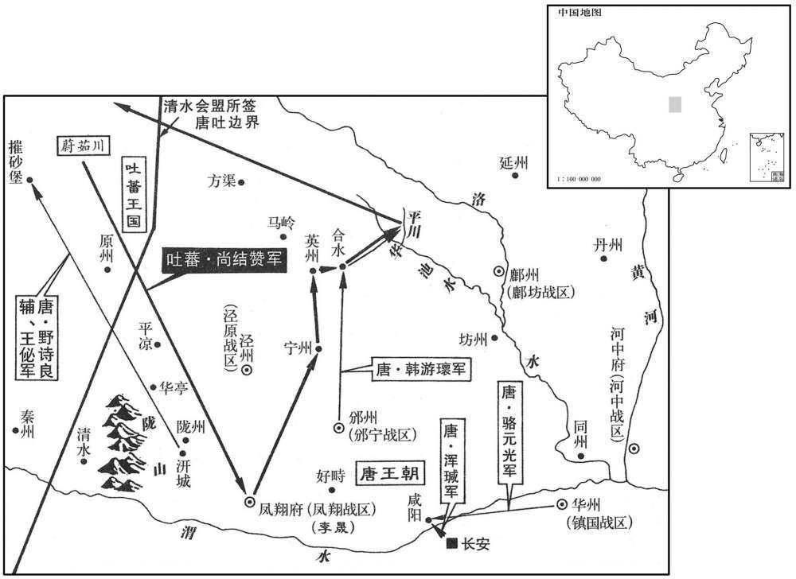
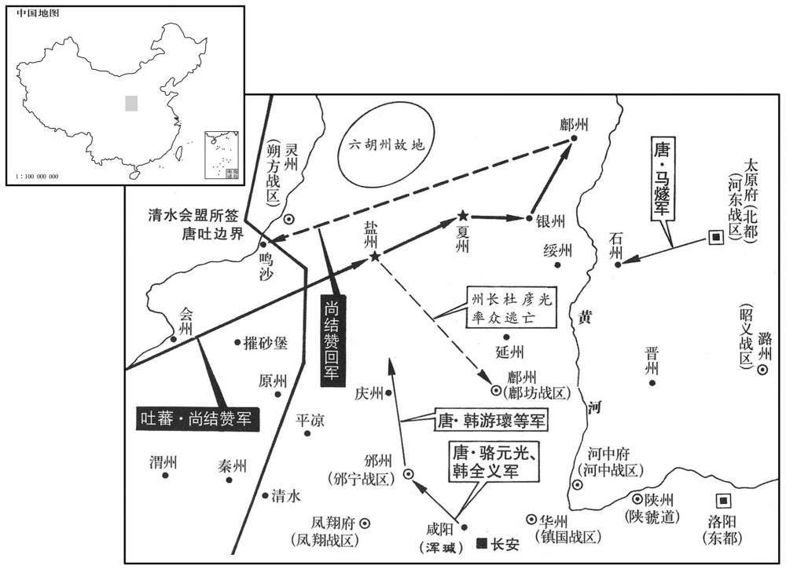
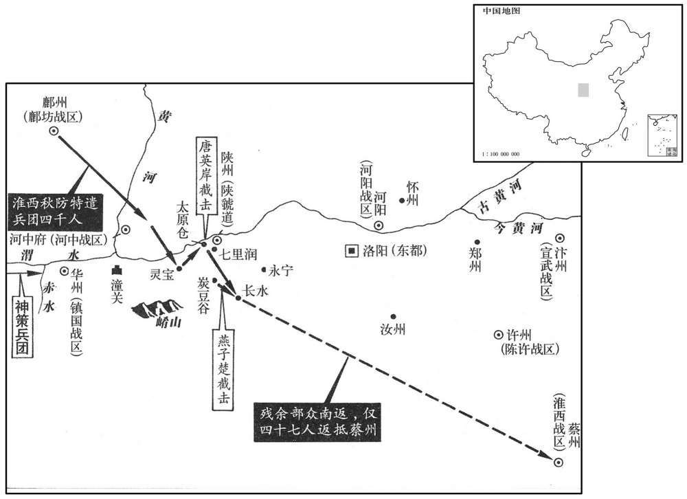
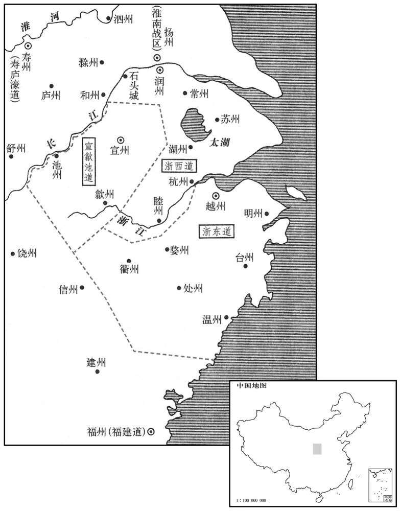
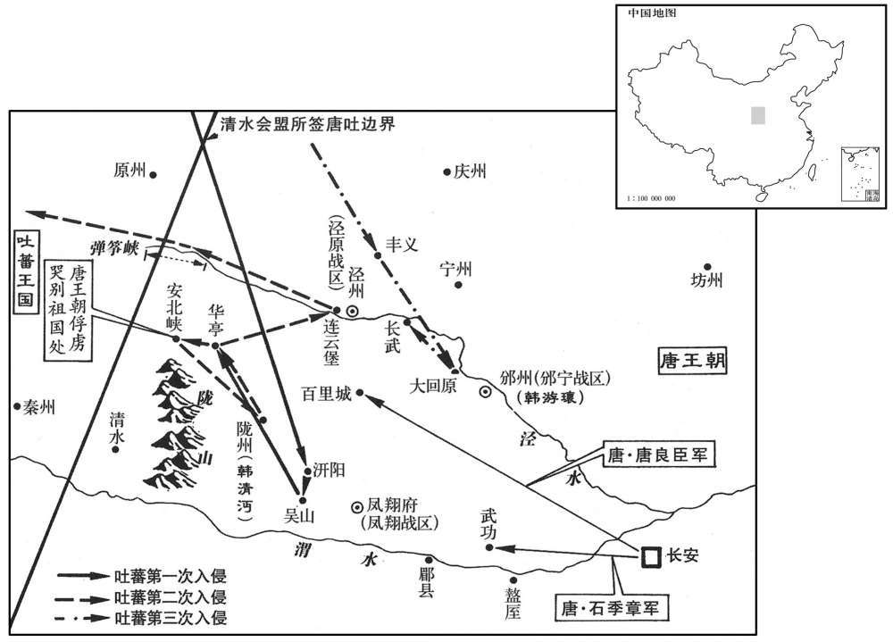
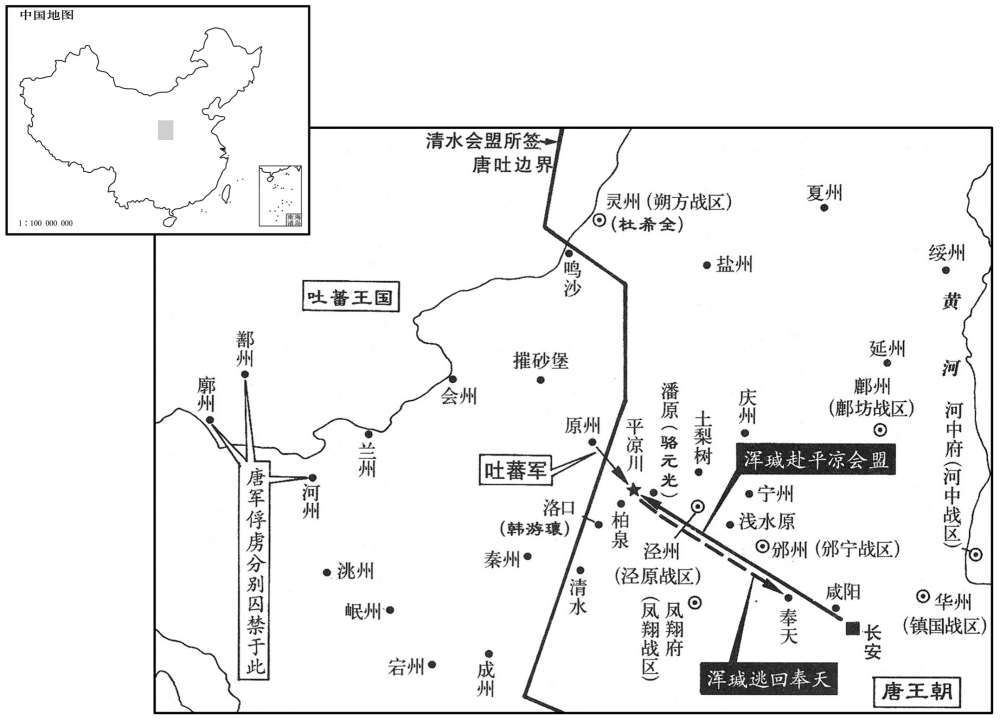

卷次与人物目录 / 卷232
资治通鉴 · 卷第二百三十二【唐纪四十八】
公元785年至公元787年 · 原文、白话与胡三省注
本页按胡注本编排保存全卷内容。白话采用本站所据译本，未可靠对应的内容另列说明；事件标题用于定位，并非原书文字。
本卷共98段原文，97段有译文对应，1段缺译或待核对。
卷第二百三十二【唐纪四十八】起旃蒙赤奋若（乙丑）八月，尽强圉单阏（丁卯）七月，乙二年。
卷首原文与注释
德宗神武圣文皇帝七
公元785年 · 唐德宗神武圣文皇帝贞元元年
贞元元年〔（乙丑、七八五）〕
上传原文的注释括号有异常，字符原样保留；无法可靠划分的段落默认全文显示。
本年记事分属相邻卷，按原书顺序分别保留：第231卷 · 第232卷。
本年事件索引（现代整理）
八月，甲子，诏凡不急之费及人赜食皆罢之。〔赜，而陇翻〕。
八月，甲子（初二），德宗颁诏将一切不急的开销以及因事由官府供给饮食的多余人员一律裁撤。
马燧至行营，与诸将谋曰：「长春宫不下，〔燧，音遂。将，即亮翻。围长春宫事始上卷是年四月〕。则怀光不可得。长春宫守备甚严，攻之旷日持久，我当身往谕之。」遂径造城下，〔造，七到翻〕。呼怀光守将徐庭光，庭光帅将士罗拜城上。〔将，即亮翻。帅，读曰率〕。燧知其心屈，徐谓之曰：「我自朝廷夹，可西向受命。」庭光等复西向拜。〔复，扶又翻〕。遂曰：汝曹自禄山己来，徇国立功四十余年，〔天宝十四载，安禄山反，郭子仪、李光弼皆以朔方军讨贼立大功。其后回纥、吐番深入京畿，诸镇叛乱，外御内讨，亦倚朔方军以成功。至是年凡三十一年，今日「四十余年」，「四」字误也，当作「三」〕。何忽为灭族之计！从吾言，非止免祸，富贵可图也。」众不对。燧披襟曰：「汝不信吾言，何不信吾言，何不射我！」〔射，而亦翻〕。将士皆伏泣。燧曰：「此皆怀光所为，汝曹无罪。弟坚守勿。」〔弟读曰第，但也〕。皆曰「诺。」
马燧来到行营，与各将领计议说：“不将长春宫攻打下来，便不能捉住李怀光。长春宫的防守戒备甚为严密，若是攻打它，势必空费时日，相持很久，我应当亲自前去开导他们。”于是，马燧径直来到城下，呼喊李怀光的守城将领徐庭光，徐庭光率领将士在城上列队向马燧下拜，马燧看出徐庭光内心已经屈服，便和缓地对他说：“我是从朝廷来的，你们应该向着西面接受朝命。”徐庭光等便又向西面下拜。马燧说：“自从安禄山以来，你们献身国家，建立功勋，已有四十余年，为什么忽然做这种诛灭家族的打算！听我的话，你们不仅可以免去灾祸，而且还可以谋求富贵呢。”众人都不肯回答。马燧敞开衣襟说：“既然你们不相信我的话，为什么不用箭射我！”城上将士都伏在地上哭泣。马燧说：“这些罪过都是李怀光犯下的，你们是没有罪的。你们只管坚守这座城不出来就是了。”众人回答：“是。”
壬申，燧与浑瑊、韩游緕进军逼河中，至焦篱堡；〔浑，户昆翻，户本翻。瑊，户咸翻。緕，古回翻。焦篱堡，在河中府河西县西〕。守将尉珪以七百人降。〔尉，纡勿翻，本复尉迟，后单姓尉以从便易。降，户江翻；下同〕。是夕，怀举火，诸营不应。骆元光在长春宫下，使人招徐庭光；庭光素轻元光，遗迕骂之，又为优胡于城上以侮之，〔骆元光本安息胡人，故徐庭光为优胡以侮之〕。且曰：「我降汉将耳！」元光使白燧，燧还至城下，庭光开门降。燧以数骑入城慰怃，其众大呼曰：〔还，从宣翻，又音如字。骑，奇寄翻。呼，火故翻〕。「吾辈复为王人矣！」〔复，扶又翻，又音如字〕。浑瑊谓僚佐曰：「始吾谓马公用兵不吾远也，今乃知吾不逮多矣！」浑，户昆翻，又户本翻。瑊，古衔翻。不逮，不及也〕。诏以庭光试殿中监兼御史大夫。〔此谓之试官、兼官，以寄禄且宪衔也〕。
壬申（初十），马燧与浑、韩游进军迫近河中，抵达焦篱堡，守卫的将领尉率七百人归降。这天傍晚，李怀光举火报警，各军营没有响应的。骆元光在长春宫下面，让人招呼徐庭光，徐庭光平素看不起骆元光，派士兵骂他，又扮成胡人在城上侮辱他，而且说：“我们向汉族将领投降！”骆元光让人禀告马燧，马燧来到城下，徐庭光打开城门归降。马燧带着数人骑马入城，慰问安抚众人。徐庭光的部众大声呼喊着说：“我们又成了圣上的子民啦！”浑对佐助自己的官吏说：“开始 我自以为马公用兵与我不会相差太多，现在才知道我是远远赶不上他的。”德宗颁诏任命徐庭光为试殿中监，兼任御史大夫。
甲戌，燧帅诸军至河西：〔未白曰：河西县，本同州旧朝吧之地，唐上元元年以朝邑地置河西县，大历三年复置朝邑县，仍析朝邑五乡，并割河东三乡，依旧为河西县，县境东西十四里。帅，读曰率。考异曰：旧燧传曰：「燧帅诸军济河，兵凡八万，陈于城下。是日，牛名俊斩怀光首，以城降。」今从邠志〕。河中军士笆相惊曰：「西城擐甲矣！」又:「东城娖队矣！」〔河中，来河为两城，西城河西县，东城河东县，河中府治焉。擐，音宦。娖，侧角翻〕。须臾，军士皆易其号为日「太平」字；怀光不知所为，乃缢而死。〔缢，于计翻，又于赐翻〕。
甲戌（十二日），马燧率领诸军来到河西县，河中将士自相惊扰地说：“西城将士已经穿上铠甲啦！”又说：“东城将士已经排好列啦！”一会儿，将士们全将旗号改成了“太平”二字。李怀光不知所措，于是自缢而死。
初，怀光之解奉天围也，〔事见二百二十九卷建中四年〕。上以其子璀为监察御史，〔璀，七罪翻。监，古衔翻〕。宠待甚厚。及怀光屯咸阳不进，〔事见上卷兴元元年〕。璀密言于上曰：「臣父必负陛下，愿早为之备。臣闻君、父一也；〔人生在三，事之如一，谓君、父、师也〕。但今日之势，；陛下未能诛臣父，而臣父足以危陛下。陛下待臣厚，胡〔【章：乙十六行「胡」上有「臣」字；乙十一行本同；孔本同。】〕人性直，故不忍不言耳。」上惊曰：知卿大臣爱子，当为朕委曲弥缝，而密奏之！」〔为，于伪翻；下同。言璀当委曲弥缝，使君臣之间无隙，不当密奏其事〕。对曰：臣父非不爱臣，臣非不爱其父与宗族也；顼臣力竭，不能回耳。」上曰：「然则卿以何策自免﹖」对曰：「臣之进言，非苟求生；臣父败，则臣与之俱死矣，复有何策哉！〔复，扶又翻，下同；又音如字，幵同〕。使臣卖父求生，；陛下亦安用之！」上曰：「卿勿死，为朕更至咸阳谕卿父，使君臣父子俱全，不亦善!」璀至咸阳而还，〔更，古孟翻。还，音旋，又如字〕。曰：「无益也，愿陛下备之，勿信人言。臣今往，说谕万方，〔说式芮翻〕。臣父言：『汝小何知！主上无信，吾非贪富贵也，直畏死耳，汝岂可陷吾入死地邪！』〔邪，音耶〕。
当初，李怀光解除奉天围困时，德宗任命他的儿子李璀为监察御史，对他恩宠很厚。到李怀光驻扎咸阳，不肯进兵时，李璀暗中对德宗说：“我父亲肯定会辜负陛下，希望陛下早作准备。我听说君主和父亲是一回事，但是如今的形势是，陛下未能诛除我的父亲，而我的父亲却足以危及陛下。陛下对待我这么好，胡人性情直率，所以我不忍心不说啊。”德宗惊讶地说：“朕知道你是大臣李怀光所疼爱的儿子，你应该为朕婉转曲折地在其中弥补裂痕，而你地秘密上奏！”李璀回答说：“我的父亲并不是不疼爱我，我也并不是不爱我的父亲和宗族。但我已用尽心力，不能拘回。”德宗说：“这样说来，你用什么办法使自己免除一死呢？”李璀回答说：“我进上此言，不是要苟且求活。我父亲一旦败亡，那我就和他一同死去，还会有什么办法呢！假如我出卖父亲以求生存，陛下又怎么能用我这种人呢！”德宗说：“你别死，为朕再到咸阳开导你的父亲，使君主与臣下、父亲与儿子的伦常都得以保全，不也是很好的吗！”李璀前往咸阳，回来以后说：“没有效果啊，希望陛下防备我父亲，不要听信别人所说的。如今我前往劝导，用尽了千方百计，我父亲说：‘你小子知道什么！圣上不讲信用。我并不贪图富贵但我也怕死啊，你怎么可以把我陷于死地呢！”’
及李泌赴陕，〔李必赴陕，见上卷是年七月。泌，薄必翻，陕，失冉翻〕。上谓之曰：「朕所以再三欲全怀光者，诚惜璀也；卿至陕，试为朕招之。」对曰：「陛下未幸梁、洋，怀光犹可降也。〔陕，失冉翻。为，于季翻。洋音祥。降，户江翻〕。今则不然。岂有人臣迫逐其君〔迫逐其君，谓怀光逼帝自奉天幸山南也〕。而可复立于其朝乎！纵彼颜厚无惭，〔人知愧者色见于面，不知愧者谓之颜厚。复，扶又翻，又音如字。朝，直遥翻；下同〕。陛下每视朝，何心见之！臣得入陕，借使怀光请降，臣不敢受，况招之乎！李璀固贤者，必与父俱死矣；若其不死，则亦无足贵也。」及怀光死，璀先刃其二弟，乃自杀。〔楚令尹子南之子与李璀者，皆处君父子大伦之变，以死继之，可哀也巳〕！
到李泌前往陕州时，德宗对他说：“我再三想要保全李怀光的原因，实在是怜惜李璀啊。你到陕州后，试着为朕招抚他吧。”李泌回答说：“在陛下没有出走梁州、洋州时，还是可以使李怀光投降的，现在却不行了。哪有臣下逼走了他的君主，还可以再站在朝堂之上的呢！即使他脸皮厚，不惭愧，每当陛下上朝之时，看到他会是什么心情呢！我进入陕州后，假如李怀光请求投降，我也不敢接受，何况让我去招抚他呢！李璀固然是贤明的人，他一定会与他父亲一起去死了。如果他不肯死，那也没有可贵之处了。”及至李怀光死后，李璀事先杀了他的两个弟弟。然后便自杀了。
朔方将牛名俊断怀光首出降。〔将，即亮翻。断，音短〕。河中兵犹万六千人，燧斩其将阎晏等七人，〔阎晏蔜怀光东保河中称兵犯同州者也。考异曰：邠志云「八人」，今从旧马燧传〕。余皆不问。燧自辞行至河中平，凡二十七日。〔戊申至甲戌，二十七。史言马燧期一月平怀光，不愆于素〕。燧出高郢、李墉于狱，〔怀光囚郢、见上卷本年。郢，以井翻。墉余封翻〕。皆奏置幕下。
朔方将领牛名俊割下李怀光的头颅出城投降。河中兵还有一万六千人，马燧将他们的将领阎晏等七人斩杀，对剩下的人都不予追究。马燧从告别德宗到平定河中，共用了二十七天。马燧将高郢、李放出监狱，奏请将他们都安置在自己的幕府之中。
韩游緕之攻怀光也，杨怀宾战甚力，上命特原其子朝晟；〔李怀光囚杨朝晟，见二百三十卷元年三月。緕，古回翻。朝，直遥翻。晟，成正翻〕。游緕遂以朝晟为都虞候。〔为杨朝晟后帅邠宁张本〕。
韩游攻打李怀光时，杨怀宾作战甚为出力，德宗命令特别宽恕了他的儿子杨朝晟。于是，韩游任命杨朝晟为都虞候。
上使问陆贽：「河中既平，复有何事所宜区处﹖」〔处，昌吕翻〕。令悉条奏。〔令，力丁翻〕。贽以河仲既平，虑必有希旨生事之人，以为王师所向无敌，请乘胜讨淮西者。李希烈必诱谕其所部及新附诸帅曰：〔新附诸帅，谓李纳、王武俊、田绪等。诱，音酉。「奉天息兵之心，因窘〔【章：乙十六行「窘」下有急字；乙十一行本同；孔本同；退斋校同。】〕而言，朝廷稍安，必复诛伐。」如此，则四方负罪者孰不盾疑，河朔、青齐固当响应，〔窘，臣陨翻。复，扶又翻，又音如字。河朔，谓王武俊、田绪、刘怦；青齐，谓李纳〕。兵连祸结，赋役繁兴，建中之忧，行将复起。乃上奏，其略曰：「福不可以屡徼，幸不可以常觊。〔上，时掌翻。徼，一遥翻。觊，音冀〕。臣〔【章：乙十六行本「臣」上有「又曰」二字；乙十一行本同；孔本同。】〕姑生祸为忧，未敢以获福为贺。「陛下怀悔过之深诚，〔实心为诚〕。降非常之大号，〔此谓兴元赦书也〕。所在宣瞓之际，闻者莫不涕流。〔瞓，与扬同〕。假王叛换之夫，削伪号以请罪；〔王武俊、田悦、李纳去王号谢罪，见二百二十九卷兴元元年〕。观衅首鼠之将，一纯诚以效勤。」〔谓马燧、韩滉、陈少游读通鉴者因其事而观其心迹，则知之矣〕。又曰：「曩讨之而愈叛，今释之而毕来；曩以百万之师而力殚，今以咫尺之诏而化洽。是则圣王之敷理道，服暴人，〔理道，即治道，避高宗讳改之之〕。任德而不任兵，明矣；群帅之悖臣礼，拒天诛，图活而不图王，又明矣。〔帅，所类翻；下同。悖，蒲内翻〕。是则好生以及物者，乃自生之方；施安以及物者，乃自安之术。挤彼于死地〔挤，子细翻，又子西翻〕。而求此之久生也，措彼于危地而求此之久安也，从古及今，未之有焉。」又曰：「一夫不率，〔率，循也。不率，谓不循上之教令也〕。阖境罹殃；一境不宁，普天致扰。」又曰：「亿兆污人，〔污，乌瓜翻，污下也〕。四三叛帅，感陛下自新之旨，悦陛下盛德之言，革面易辞，且修臣礼，其于深言密议固亦未尽坦然，必当聚心而谋，倾耳而听，观陛下所行之事，考陛下所誓之言。若言与事符，则迁善之心渐固；傥事与言背，则虑祸之态复兴。」〔陆贽斯言，亦可以谓之深切当时事情。背，蒲妹翻。复，扶又翻〕。又曰：「朱泚灭而怀光戮，怀光戮而希烈征，希烈傥平，祸将次及，则彼之蓄素疑而怀宿负者，能不为之动心哉！」〔为，于伪翻〕。又曰：「今皇运中兴，天祸将悔，以逆泚之偷居上国，〔泚，且礼翻，又音此。唐都长安，故谓之上国〕。以怀光之窃保中畿，〔开元八年，以河中为中都，河东、河西二县为次赤县，诸县为次畿县〕。岁未再周，相次枭殄，〔去年六月斩朱泚，今年八月平怀光。枭殄，谓枭其首而殄绝其类。枭，坚尧翻〕。实众慝惊心之日，〔众慝，犹言众恶也。慝，吐得翻〕。群生改观之时。〔观，古玩翻，又音如字〕。威则已行，惠犹未洽。诚宜上副天眷，下收物情，布恤人之惠以济威，乘灭贼之威以行惠。」又曰：「臣所未敢保其必从，唯希烈一人而已。揆其私心，非不愿从也；想其潜虑，非不追悔也。〔兴元赦文，李希烈不与朱泚同科，亦在肆赦之数〕。但以猖狂失计，已窃大号，虽荷陛下全宥之恩，然不能不自腼于天地之间耳。〔荷，下可翻。腼，他典翻，惭颜也〕。纵未顺命，斯为独夫，〔孟子曰：「残贼之人谓之独夫。」言人无亲辅之者〕。内则无辞起兵，外则无类以求助，其计不过厚抚曲，偷容岁时，心虽陆梁，势必不致。陛下但敕诸镇各守封疆，彼既气痔算穷，是乃狴牢之类，〔狴，边迷翻，又部礼翻。狴，犴；牢，狱；所以拘囚有罪〕。不有人祸，则当鬼诛。〔陆贽论李希烈事，曲尽情势〕。古之不战而屈人之兵者，此之谓欤！」〔兵法：百战百胜，不如不战而屈人之兵〕。
德守让人询问陆贽说：“河中已经平定，还有什么事情该当处理的？”让陆贽全部条列出来上奏。陆贽认为，河中平定以后，可虑的是必然会有迎合意旨、无端生事的人，认为皇上的军队所向无敌，请求乘胜讨伐淮西。李希烈也必然会诱导他的军队以及新近归附的各节帅说：“在奉天所颁布的停止用兵的诏旨，是因处境窘困而讲的，只要朝廷稍微安定下来，是一定会再事讨伐的。”这样，各地那些负有罪名的人谁不担心自身难保？河朔、青齐肯定是要响应他的。战事连绵，灾祸不断，赋税纷繁，力役频兴，建中年间的忧患便将再次发生了。陆贽于是进上奏章，大致说：“福缘是不能够屡次侥幸取得的，而侥幸也不是能够经常妄自希图的。我姑且认为今后会发生祸患而为陛下担忧，不敢认为今后会获得福缘而向陛下庆贺。”他又说：“陛下怀着深切悔过的诚意，贬抑非常式的尊号，当诏书在各处宣布时，听到的人没有不流下眼泪的。自署王号的横蛮跋扈之人，削去伪号，请求治罪；伺机而动迟疑不定的将领，全都诚心诚意地效力勤王。”他又说：“以往讨伐叛乱，叛乱反而更加严重，如今释赦他们，他们反而都来归顺；以往调遣了百万之师而终于兵力穷尽，如今只是颁布了不满一尺的诏书反而德化周遍。可见圣明的君王推行促使政治修明的治国之道，使强暴之人心悦诚服，应当运用恩德感召别人，而不是运用兵力征服别人，这是显而易见的了。各镇的节帅违背人臣应有的礼典，抗拒朝廷的诛讨，为的是谋求存活，而不是谋求称王，也是显而易见的了。可见希望生存，并将此心普及万物，乃是使自己生存的良方；喜欢安宁，并将此心普及万物，乃是使自己安宁的嘉术。将那些人推到必死之地，而想让这些人长久生存；将那些人丢到危殆之地，而想让这些人长久安宁，从古至今，没有过这样的事情。”他又说：“一个人不遵循皇上的教令，整个地区都遭受祸殃；一个地区不得安宁，普天下都招致骚扰。”他又说：“众多的昏昧无知的人们，以及三四个背叛朝廷的节帅，为陛下容许重新作人的宗旨而感动，为陛下含蕴着盛美德行的话语而喜悦，洗心革面，改易不敬之辞，并且奉行人臣之礼。然而，他们对陛下深切坦诚的谈话和体贴周到的议论，肯定还没有完全明白理解，他们必然要专心谋划，侧耳细听，观察陛下所做的事情，考究陛下所发的誓言。如果陛下所说的话与所做的事相符合，他们改恶从善的心意就会逐渐牢固；倘若陛下所做的事与所说的话相违背，他们顾虑招致祸患的态度就会重新抬头。”他又说：“朱灭亡后李怀光受戮，李怀光受戮后李希烈被征讨，倘若李希烈被平定了，祸患又将依次连及别人，那么，那些素积疑虑而久怀野心的人们，能不意志动摇吗！”他又说：“如今国家的气运重新兴盛起来，上天降下的祸患将要成为过去。就朱窃居京城，李怀光私占中都而言，在不到两年里，便相继使他们主帅伏诛，全军覆灭，这实在是邪恶之徒震动心魄的日子，是所有生灵改变面貌的时候。陛下的威严已经显示出来了，但陛下的恩惠还没有普及开来。陛下诚然应当对上顺应上天的眷顾，对下集合人们的愿望，播散体恤民心的恩惠来增益威严，乘着消灭贼寇的威严来施加恩惠。”他又说：“我所不敢担保其人一定会顺从朝廷的，只有李希烈一个人罢了。推测他私下的意图，不是不愿顺从朝廷；料想他暗中的考虑，也还不是不打算悔改前非。但是，他因考虑不周，肆意妄行，已经窃称帝号，即使他承受陛下保全宽宥他的恩典，但他却不能不自觉无颜生活在天地之间。即使他不肯顺从朝命，却已成了独夫民贼，对内则没有发兵起事的理由，对外则没有寻求援助的同伙，
丁卯，诏以「李怀光尝有功，宥其一男，使续其后，赐之田宅，归其首及尸使葬。加马燧兼侍中，浑瑊检校司空；余将迕赏赉各有差。〔燧，音遂。浑，户昆翻，又户本翻。瑊，古咸翻。校，古孝翻。将，即亮翻。赉，来戴翻〕。诸道与淮西连接者，宜各守封疆，非彼侵轶，不须进讨。〔轶，徒结翻，突也〕。李希烈若降，当待以不死；自余将士百姓，一无所问。」〔行陆贽之言也〕。
丁卯（初五），德宗颁诏说：“李怀光曾经立下功劳，现宽宥他的一个儿子，使此子承续他，赐给此子田地住宅，将李怀光的头颅和尸身送回，让此子殡葬。加封马燧兼任侍中，加封浑为检校司空，其余将士的赏赐各分等级不同。与淮西疆界连接的各道，应该守卫本境疆土，只要不是他们突然袭击，就不必要进兵讨伐。假如李希烈投降，应该让他留条活命，其余将士与百姓，一概不予追究。
初，李晟尝将神策军戍成都，〔盖大历十四年救蜀时也。将，即亮翻，又音如字。晟，成正翻〕。及还，以营妓高洪自随。〔还，从宣翻。妓，渠绮翻〕。西川节度使张延赏怒，追而还之，由是有隙。〔使，疏吏翻〕。至是，刘从一有疾，上召延赏入相，晟表陈其过恶；上重违其意，〔相，息亮翻。重，难也〕。以延赏为左仆射。〔李晟居功名之际，以一妇人之故，修怨于向用之臣。且天子命相而勋臣以私怨间之，其能自安乎！斯不学之由也。为延赏谗晟张本。射，寅谢翻〕。
当初，李晟曾经带领神策军戍守成都，等到回去时，他便让营中的妓女高洪跟随着自己。西川节度使张延赏很生气，追上李晟，将高洪索回，由此二人有了嫌隙。及至此时，刘从一得了疾病，德宗传召张延赏出任宰相，李晟上表陈述张延赏的过失与缺点，德宗不愿意违背他的意愿，便任命张延赏为左仆射。
骆元光将杀徐庭光，谋于韩游緕〔緕，古回翻〕。曰：「庭光辱吾祖考，〔谓为优胡戏侮之也〕。吾欲杀之，马公必怒，公能救其死乎！」緕曰：「诺。」壬什，遇庭光于军门之外，揖而数其罪，〔数，所具翻，又所主翻〕。命左右碎斩之。〔考异曰：实录：「甲申，骆元光专杀徐庭光，上令宰相谕谏官勿论。」邠志曰：「二十日，骆公谋于韩公曰：『徐庭光见诟，辱及祖父，义不同天。』是日，遂杀之。」按是月癸亥朔。甲申，二十二日，盖奏到之日也。今从邠志〕。入见马燧，顿首请罪，燧大怒曰：「庭光已降，受朝廷官爵，公不告辄杀之，是无统帅也！」〔燧，音遂。降，户江翻。朝，直遥翻。统，他综翻，俗从上声。帅，所类翻〕。欲斩之。游緕曰：「元光杀裨将，公犹怒如此。公杀节度仗，天子其谓何！」燧默然；浑瑊亦为之请，〔为，于伪翻〕。乃舍之。
骆元光准备杀掉徐庭光，便与韩游计议说：“徐庭光侮辱我的祖先，我想杀他，马公必然大怒，你能救我一命吗？”韩游说：“好吧。”壬午（二十日），骆元光在军营大门外遇到徐庭光，拱手相见后，便数说他的罪过，命令随从人员零刀碎剐地杀死了他。骆元光入营见马燧，伏地叩头，请求治罪，马燧非常气愤地说：“徐庭光已经归降，接受了朝廷封拜的官爵，你不告诉我一声就将他杀死，这是目无统帅！”马燧准备斩杀骆元光，韩游说：“骆元光杀了一个副将，你尚且愤怒成这个样子。你杀了节度使，圣上将说你些什么！”马燧没有说话，浑也为骆元光求情，于是马燧舍弃了骆元光。
浑瑊镇河中，尽得李怀光之众，朔方军自分居邠、蒲矣。〔自郭子仪以来，朔方军亦分屯邠、蒲而统于一帅。今居邠者韩游緕帅之，居蒲者浑瑊帅之，不相统属，故史言其始分。浑，户昆翻，又户本翻。邠，卑旻翻〕。
浑镇守河中，得到了李怀光所有的部众，朔方军自此分别屯驻州与蒲州了。
卢龙节度使刘怦疾病，〔使，疏吏翻。怦，普耕翻。疾甚曰病〕。九月己亥，诏以其子行军司马济权矢度事；怦寻薨。〔薨，呼肱翻〕。
卢龙节度使刘怦得了重病，九月，己亥（初七），德宗颁诏命令他的儿子行军司马刘济权且代理节度使事务。不久，刘怦去世。
己未，中书侍郎、同平章事刘从一罢为户部尚书；庚申，薨。〔以疾罢而薨。尚，辰羊翻〕。
己未（二十七日），中书侍郎、同平章事刘从一被罢免为户部尚书。庚申（二十八日），刘从一去世。
冬，十月癸卯祀圜丘，赦天下。
冬季，十月，癸卯（疑误），德宗祭祀圜丘，大赦天下。
十二月，甲戌，户部奏今岁入贡者凡百五十州。〔时河朔诸镇及淄青、淮西皆不入贡，河、陇诸州又没于吐蕃〕。
十二月，甲戌（十三日），户部奏，本年共有一百五十州入朝进贡。
于阗王曜上言：「兄胜让国于臣，〔事见二百二十一卷肃宗上元元年。阗，徒贤翻。上，时掌翻〕。今请复立胜子锐。」上以锐检校光禄卿，还其国。胜国辞曰：「曜久行国事，国人悦服。锐生长京华，〔复，扶又翻，又音如字。校，古孝翻。还，从宣翻，又音如字。长知两翻〕。不习其俗，不可往。」上嘉之，以锐为韶王譗议。〔韶王暹，代宗子也。唐制：王府官譗议参军，正五品上〕。
于阗王尉迟曜上奏说：“我哥哥尉迟胜将于阗国让给了我，现在请朝廷再册立尉迟胜的儿子尉迟锐。”德宗任命尉迟锐为检校光禄卿，让他返回于阗国。尉迟胜一再推辞说：“尉迟曜长时间办理国家事务，国中百姓心悦诚服。尉迟锐生长在京城，不熟悉于阗风俗，不能前往。”德宗嘉许尉迟胜，任命尉迟锐为韶王李暹的咨议。
公元786年 · 唐德宗神武圣文皇帝贞二年
二年〔（丙寅、七八六）〕
上传原文的注释括号有异常，字符原样保留；无法可靠划分的段落默认全文显示。
本年事件索引（现代整理）
- 刘滋、崔造、齐映同任宰相
- 崔造改革转运及财赋管理，宰相分判六部
- 杜文朝进犯襄州，被樊泽击擒
- 崔造举荐元琇掌盐铁，李泌开凿陆运道路
- 陈仙奇毒杀李希烈后率淮西归降
- 韩滉运粮抵陕，缓解关中军粮危机
- 灾后麦熟，饥民逐渐恢复
- 程日华任横海军节度使
- 吴少诚杀陈仙奇，自任淮西留后
- 曲环任陈许节度使，整顿荒乱恢复民生
- 李澄病逝，儿子李士宁秘不发丧
- 吐蕃大举侵扰泾、陇、邠、宁州
- 李泌向德宗陈述府兵兴废沿革，建议恢复府兵
- 十六卫增设上将军以酬功臣
- 李克宁夺取父亲李澄遗留军府财物，朝廷改任贾耽
- 吐蕃游骑逼近好畤，京师传言德宗将再次出逃
- 李晟设伏击败尚结赞所部吐蕃骑兵
- 尚结赞谋划离间李晟、马燧、浑瑊
- 李晟遣军攻破吐蕃摧砂堡
- 德宗立淑妃王氏为皇后
- 韩滉入朝
- 王皇后去世
- 吐蕃攻占盐州，刺史杜彦光弃城逃走
- 韩滉劝刘玄佐入朝并资助其行装
- 崔造改革财赋未成，韩滉接管转运盐铁事务
- 吐蕃攻占夏州、银州、麟州
- 崔造罢相，元琇贬官
- 韩游瑰请攻盐州，河曲六胡州归降
- 张延赏散布谗言离间李晟，后向李晟谢罪

本年形势与背景参考图

本年形势与背景参考图
春，正月，壬寅，以吏部侍郎刘滋为左散骑常侍，与给事中崔造、中书舍人齐映并同平章事。滋，子玄之孙也。〔散，悉亶翻。骑，奇寄翻。刘子玄以史笔事武后、中宗〕。
春季，正月，壬寅（十一日），德宗任命吏部侍郎刘滋为左散骑常侍，与给事中崔造、中书舍人齐映一并任同平章事。刘滋是刘子玄的孙子。
造少居上元，〔少，始照翻。上元县，带升州〕。与韩会、卢东美、张正则为友，以王佐自许，时人谓之「四夔」。〔夔者，唐、虞之良臣。时人重四人者，以「四夔」称之〕。上以造在朝廷敢言，故不次用之。〔朝，直遥翻〕。滋、映多让事于造。造久在江外，疾钱榖诸使罔上之弊，奏罢水陆运使、度支巡院、江淮转运使等，诸道租赋悉委观察使、刺史遣官部送诣京师。令宰相分判尚书六曹：齐映判兵部，李勉判刑部，刘滋判吏部、礼部，造判户部、工部；又以户部侍郎元琇判诸道盐铁、榷酒，〔使，疏吏翻。度，徒洛翻。尚，辰羊翻。琇，音秀。榷，古岳翻〕。吉中孚判度支两税。
崔造早年住在上元县，与韩会、卢东美、张正则结为朋友，自认为是帝王的辅佐，当时的人们将他们四人比作虞舜的四位贤臣，称为“四夔”。德宗因崔造在朝廷中敢于言事，所以不拘等次地任用了他，刘滋、齐映往往将事情推给崔造办理。崔造长期生活在长江以南，憎恨执掌钱谷诸使欺瞒上级的弊端，上奏罢除了水陆运使、度支巡院、江淮转运使等，各道的赋税全委托观察使、刺史派遣官吏送至京城。德宗命令宰相分别兼管尚书省六曹：齐映兼管兵部，李勉兼管刑部，刘滋兼管吏部和礼部，崔造兼管户部和工部。还让户部侍郎元兼管诸道盐铁和酒类专营，让吉中孚兼管度支两税。
李希烈将杜文朝寇襄州；二月，癸亥，山南东道节度使樊泽击擒之。〔将，即亮翻，直遥翻。山南东道节度治襄州〕。
李希烈的将领杜文朝侵犯襄州。二月，癸亥（初三），山南东道节度使樊泽进击并擒获了他。
崔造与元琇善，故使判盐铁。韩滉奏论盐铁过失，〔为崔造、元琇得罪张本。滉呼广翻〕。甲戌，以琇为尚书右丞。陕州陆运使李泌奏：「自集津至三门，〔泌，薄必翻。集津仓，在三门东。三门仓，在三门西〕。凿山开车道十八里，以避底柱之险。」底柱两山屹立河中，河水分流，包山而过，世谓之三门。车道者，陆运之道，舍舟而车运也〕。是月道成。
两版字句有差异，建议核对原文。
崔造与元友好，所以让他兼管盐铁。韩上奏议论盐铁事务中的过失。甲戌（十四日），德宗任命元为尚书右丞。陕州水陆运使李泌上奏说：“请准许由集津到三门，凿穿山石，开辟车道十八里，以便避开底柱天险。”就在本月内，车道告竣。
三月，李希烈别将寇郑州，义成节度使李澄击破之。〔代宗大历七年，赐滑亳节度为永平节度。贞元元年，永平军节度更号义成军节度。兴元元年，李澄得邺州〕。希烈兵势日蹙，会有疾，夏，四月丙寅，大将陈仙奇使医陈山甫毒杀之；〔果如陆贽所料〕。因以兵悉诛其兄弟妻子，举众来降。〔降，户江翻。考异曰：杜牧窦烈女传曰：「初希烈入汴州，闻户曹参军窦良女美，使甲士至良门，取桂娘以去。将出门，顾其父曰：『慎无戚，必能灭贼，使大人取富贵于天子。』桂娘以才色在希烈侧，复能巧曲取信，凡希烈之密谋，虽妻子不佑者，悉皆得闻。希烈归蔡州，桂娘谓希烈曰：『忠而勇，一军莫如陈先奇。其妻窦氏，先奇宠且信之，愿得相往来，以姊妹齿，因徐说之，使坚先奇之心。』希烈然之。桂娘因以姊事先奇妻，尝间曰：『为贼迟晚必败，姊宜早图遗种之地。』先奇妻然之。兴元元年四月，希烈，暴死，其子不发丧，欲尽诛老将校，以卑少者代之，计未决。有献含桃者，桂娘白希烈子，请分遗先奇妻，且以示无事于外，因为蜡帛书曰：『前曰巳死，殡在后堂，欲诛大臣，须自为计。』以朱染帛，丸如含桃。先奇发丸见之，言于薛育。育曰：『两日希烈称疾，但怪乐曲杂发，夜一绝，此乃有诛未定，示暇于外，事不疑矣。』明日，先奇、薛育各以所部噪于门，请见希烈。希烈子迫，出拜曰：『愿去伪号，一如李纳。』先奇曰：『尔父勃逆，天子有命诛之。』因斩希烈及妻、子，函七首以献，暴其尸于市。后两月，吴少诚杀先奇；佑桂娘谋，因亦杀之。」今从实录及旧传〕。甲申，以仙奇为淮西节度使。
三月，李希烈的别将侵犯郑州，义成节度使李澄击败了他。李希烈军的形势日益紧迫，恰好他生了病，夏季，四月，丙寅（初七），大将陈仙奇指使医生陈山甫将他毒死。陈仙奇于是派兵将李希烈的兄弟、妻子、儿女全部诛杀，率众前来投降。甲申（二十五日），德宗任命陈仙奇为淮西节度使。
关中仓廪谒，禁军或自脱巾呼于道曰：〔呼，火故翻〕。「拘吾于军而不给粮，吾罪人也！」上忧之甚，会韩滉运米三万斛至陕，李泌即奏之。上喜，遽至东宫，谓太子曰：「米己至陕，吾父子得生矣！」〔滉，呼广翻。陕，失冉翻。泌，薄必翻。记王制曰：国无六年之蓄曰急，无三年之蓄曰国非其国也。况日阕无储者乎！日阕无储，有以继之犹可，况漕运不，朝不及夕者乎！唐都关中，仰给东南之餫。德宗于兵荒之余，其窘乏尤不可言。观其父子相与语，亦惩冱卒之变，发之于言语，有不能以自揜者。裴延龄知之，故得因以排陆贽〕。时禁中不酿，命于坊市取酒为乐。〔乐，音洛〕。又遣中使谕神策六军，军士皆呼万岁。
关中粮食库存已经用光，禁军中有人摘下头巾，在道上大喊：“把我拘束在军中，但不给粮食，我简直成罪人了！”德宗甚为忧虑，适逢韩将三万斛米运到陕州。李泌当即奏报朝廷。德宗大喜，匆忙来到东宫，对太子说：“米已运到陕州，我父子能够活下去了！”当时，宫廷中不造酒，德宗让人上街取酒回来作乐。德宗又派遣中使告诉神策六军，军中将士都高呼万岁。
时比岁饥馑，〔比，毗至翻〕。兵民率皆瘦黑，至是麦始熟，市有醉人，当时以为嘉瑞。人户饱食，死者复伍之一。〔复，扶又翻〕。数月，人肤色乃复故。
当时，由于连年饥荒，将士、百姓全都又瘦又黑。至此，麦子开始成熟，街市中有了醉酒之人，当时认为这是嘉兆瑞象。人们骤然吃得很饱，因此而致死的人又有五分之一。过了几个月，人们皮肤的颜色才恢复原状。
横海军使程日华为节度使。〔沧州始别为即镇。以此观之，则以程日华为横海军副大使，上卷衍「大」字明矣〕。
德宗任命横海军使程日华为节度使。
秋，七月，淮西兵马使吴少诚杀陈仙奇，自为留后。少诚素狡险，为李希烈所宠任，故为之报仇。〔使，疏吏翻。少，始照翻。故为，于伪翻；下因为同〕。己酉，以虔王谅为申、光、随、蔡节度大使，以少诚为留后。
秋季，七月，淮西兵马使吴少诚杀死陈仙奇，自任留后。吴少诚素来狡猾阴险，被李希烈所眷宠信任，所以吴少诚为他报仇。己酉（二十二日），德宗任命虔王李谅为申、光、随、蔡节度大使，任命吴少诚为留后。
以陇右行营节度使曲环为陈许节度使。〔曲环时以陇西行营兵戍陈许〕。陈许荒乱之余，户口流散。曲环以勤俭率下，政令宽简，赋役平均，数年之间，流亡复业，兵食皆足。
德宗任命陇右行营节度使曲环为陈许节度使。在兵荒马乱之后，陈许地区户口流亡散失。曲环以勤俭的作风约束部下，行政措施与法令都很宽和简明，赋税劳役平均，在几年时间里，流离亡散的人们又重操旧业，兵马与粮食都充足起来。
八月，癸未，义成节度使李澄薨，其子士〔【章：乙十六行本「士」作「克」；乙十一行本同；退斋校同；张校同，云无注本误「士」。】〕宁谋总军务，秘不发丧。
八月，癸未（二十七日），义成节度使李澄去世，他的儿子李克宁图谋总揽军中事务，隐秘死讯，暂不公告于众。
丙戌，吐蕃尚结赞大举寇泾、陇、邠、宁，掠人畜，芟禾稼，西鄙骚然，州县各城守。诏浑瑊将万人，骆元光将八千人屯咸阳以备之。
丙戌（三十日），吐蕃尚结赞大规模地侵犯泾州、陇州、州、宁州，掳掠人口与牲畜，收割庄稼，西部边境骚动不安，州县各自据城防守。德宗颁诏命令浑带领一万人，骆元光带领八千人在咸阳驻扎，以防御吐蕃。
初，上与〔【章：乙十六行「与」下「常侍」二字；乙十一行本同；张校同，云无注本亦无。】〕李泌议复府兵，泌因为上历叙府兵自西魏以来兴废之由，〔西魏置府兵，见一百六十三卷梁简文帝大宝元年。府兵废见二旦一十二卷玄宗开元十年〕。且言：「府兵平日皆安居田亩，每府有折冲领之，折冲以农隙教习战陈。〔陈，读曰陈〕。国家有事征发，则以符契下其州及府，〔府者，折冲果毅府。下，遐稼翻〕。参验发之，至所期处。〔发兵刻期所会之地〕。将帅按阅，有教习不精者，罪其折冲，甚者罪及刺史。军还，则赐勋加赏，便道罢之。〔罢兵，使各随便道归农，不必还至京师而后罢〕。行者近不踰时，远不经岁。高宗以刘仁轨为洮河镇守使以图吐番，〔见二百二卷高宗仪凤二年〕。于是始有久戍之役。武后以来，承平日久，府兵浸堕，〔堕，读日隳〕。为人所贱；百姓耻之，至蒸熨手足以避其役。又，牛仙客以积财得宰相，〔事见二百一十四卷玄宗开元二十四年〕。边将效之；山东戍卒多赍缯帛自随，边将诱之寄于府库，昼则苦役，夜絷地牢，〔缯，慈陵翻。诱，音酉。絷，音执，缚也〕。利其死而没入其财。故自天宝以后，山东戍卒还者什无二三，其残虐如此。然未尝有外叛内侮，杀帅自擅者，诚以顾恋田园，恐累宗族故也。〔累，良瑞翻〕。自开元之末，张说始募长征兵，谓之骑，〔事见一百一十二卷开元十年、十三年〕。其后益为六军。〔六军分左、右为十二军〕。及李林甫为相，奏诸军皆募人为之；〔见二百一十六卷天宝八载〕。兵不土著，〔着，直略翻〕。又无宗族，不自重惜，忘身徇利，祸乱遂生，至今为梗。〔毛苌曰：梗，恶也。郑玄曰：始生此祸，乃至今日相梗不止〕。向使府兵之法常存不废，安有如此下陵上替之患哉！〔侵犯为陵，偏下为替〕。陛下思复府兵，此乃社稷之福，太平有日矣。」上日：「俟平河中，当与卿议之。」〔因置十六卫上将军，先叙议复府兵之事〕。
当初，德宗与李泌计议恢复府兵，李泌因而为德宗依次叙述自西魏以来府兵兴起与废弃的原由，还说：“在平时，府兵都安心耕种田地，每府设置折冲府统领府兵，折冲府利用农闲时节教给府兵演练战阵。当国家有事，需要征调府兵时，便将调动兵马的符节下达府兵所在的州与府，经过参验，发出府兵。府兵来到指定地点，经过将帅的审查和检阅，凡有教练演习不合标准的，要制裁府兵所在的折冲府长官，严重不合标准的，制裁还要牵连到该州刺史。罢兵以后，赐给勋官名号，颁发奖赏，由罢兵处各取方便路径，回到本地。凡是应征的人，时间短的，不超过三个月，时间长的，不超过一年。高宗任命刘仁轨为洮河镇守使，以便经营吐蕃，由此才有长期屯戍的兵役。武后在位以来，天下太平的日子长了，府兵逐渐没落，被人们看得轻贱了，百姓以当府兵为耻辱，以至于有为了逃避兵役而烫伤手足的。再者，牛仙客因积聚财货而得以出任宰相，边疆的将领都学着他的样子去做。山东戍边的士兵常常随身带着丝帛，边地的将领诱骗他们把丝帛寄存到仓库中，白天让他们服苦役，晚上将他们拘囚在地牢中，希望他们死亡以没收他们的财物。所以，自从天宝年间以后山东戍守边境的士兵能够回来的人十个没有二三，那残酷暴虐的程度就是这样。然而，当时还不曾有外部的叛变和内部的侮乱以及谋杀镇帅、自专旌节的人，这诚然是因为眷恋田地家园，惟恐连累本宗本族的原故啊。自从开元末年以来，张说开始募集长期征戍的士兵，把他们称作骑，后来将骑增加到六军。到了李林甫出任宰相进，他奏请各军都由募集来的人员组建。士兵们已经不再是本地人在本地当兵，又没有宗族，他们不再自重自异惜，宁可为财利而死，于是灾祸变乱发生了，至今还作梗不止。假使府兵制度永远存在而未被废弃，哪里会有纲纪废弛，上下失序的祸患呢！陛下打算恢复府兵，这乃是国家的福气，太平盛世指日可待了。”德宗说：“等到将河中平定后，朕自当与你计议此事。”
九月，丁亥，诏十六卫各置上将军，以宠功臣；改神策、右厢为左、右神策军，殿前射生左、右厢为殿前左、右射生军，各置大将军二人、将军二人。〔十六卫上将军，从二品。神策大将军。正二品。统军，从三品。将军，从五品〕。
九月，丁亥（初一），德宗颁诏命令十六卫各自设置上将军，以表示对功臣的恩宠。将神策左、右厢改为左、右神策军，将殿前射生左、右厢改为殿前左、右射生军，各自设置大将军两人、将军两人。
庚寅，李克宁始发父澄之丧，杀行军司马马铉，墨缞出视事，〔墨缞，自晋襄公始。，仓回翻〕。增兵城门。刘玄佐出师屯境上以制之，且使告谕切至，克宁乃不敢袭位。丁酉，以东都留守贾耽义成节度使。克宁悉取府库之财夜出，军士从而剽之，比明殆尽。〔剽，匹妙翻。比，必利翻，及也〕。淄青兵数千行营归，过滑州，〔自李正己以来，淄青兵未尝应调发赴行营也，此必李纳遗兵自戍守其境，亦称行营耳〕。将佐皆曰：「李纳虽外奉朝命，内蓄兼并之志，请馆其兵于城中。耽时引百骑猎于纳境，纳闻之，大喜，服其度量，不敢犯也。〔骑，奇寄翻〕。
庚寅（初四），李克宁开始将父亲李澄的死讯公布于众。他杀掉行军司马马铉，穿着黑色的麻布丧服出来办理事务，在各城门都增加了兵员。刘玄佐派出军队，在州境上屯扎，以便遏制李克宁，同时让人极为严厉地告诫他，李克宁这才没敢承袭节度使的职位。丁酉（十一日），德宗任命东都留守贾耽为义成节度使。李克宁将库存的资财悉数取出，连夜出走，将士们跟在后面抢劫财物，到天亮时，将他要带走的资物几乎抢劫完了。淄青兵数千人从行营回来，经过滑州，贾耽的将佐们都说：“虽然李纳表面上遵奉朝廷的命令，骨子里却包藏着吞并土地的意图，请将他的人马安排在城外。”贾耽说：“我们与人家州道相邻，怎么能够让人家的将士住在野外呢！”他让淄青兵住在城中。贾耽时常带领一百人骑马到李纳的境内打猎，李纳听说后，大为喜欢。他佩服贾耽的襟怀，不敢侵犯义成。
吐蕃游骑及畤；〔畤，音止〕。乙巳，城戒严，复遣左金吾将军张献甫屯咸阳。民间传言上复欲出幸以避吐蕃，〔复，扶又翻〕。齐映见上言曰：「外间皆言陛下己理装，具糗粮，〔见，贤遍翻。理装，治装也。糗，去久翻，干饭屑也〕。人情恟惧。夫大福不再，〔左传楚灵王之言。恟，许拱翻。夫，音扶〕。陛下奈何不与臣等熟计之！」因伏流涕，上亦为之动容。〔为，于伪翻〕。
吐蕃游动作战的骑兵已经到达好。乙巳（十九日），京城采取了严密的防备措施，还派遣左金吾将军张献甫在咸阳屯驻。民间传说皇上准备再次出走，以便躲避吐蕃。齐映进见德宗说：“外面都说陛下已经整顿行装，备办干粮，人们的情绪既震惊，又恐惧。一般说来，巨大的福气是不会再出现的，怎么陛下就不肯与我等详细计议一下呢！”他说着便跪伏于地，流下了眼泪。德宗也被他感动得改变了脸色。
李晟遣其将王佖将骁勇三千伏于汧城，〔晟，成正翻。其将，即亮翻。佖，毗必翻；佖将，音同上，又音如字。骁，坚尧翻。陇州之东有汧阳县，汫城在其旁。汧，口坚翻〕。戒之曰：虏过城下，勿击其首；首虽败彼全军而至，汝弗能当也。不若俟前军己过，见五方旗，虎豹衣，〔言其军士所服之衣画为虎豹文〕。乃其中军也，出其不意击之，必大捷。」佖用其言，尚结赞败走。军士不识尚结赞，仅而获免。
李晟派遣他的将领王带领勇敢善战的士兵三千人在城埋伏下来，告诫他说：“吐蕃军经过城下时，不要向他们的先头部队发起进击。因为尽管他们被打败了，但他们整个部队开来后，你还是难以抵挡的。不如等他们的先头部队开过去后，当看到军中竖着五方旗，将士穿着虎豹衣时，这便是他们的中军了，这时你出其不意地进击他们，一定能够大获全胜。”王采用了李晟所讲的打法，尚结赞战败逃走。将士们不认识尚结赞，所以他才得以幸免。
尚结赞谓其徒曰：「唐之良将，李晟、马燧、浑瑊而己，当以计去之。」燧，音遂。浑，户昆翻，又户本翻。瑊，古咸翻。为尚结赞间李晟、劫浑瑊、卖马燧张本。去羌吕翻〕。入凤翔境内，无所俘掠，以兵二万直抵城下曰：「李令公召我来，〔俘，芳无翻。李晟时为中书令，故称之为令公。此尚结赞所以间晟也〕。何不出犒我！」经宿，乃引退。〔犒，口到翻〕。
两版字句有差异，建议核对原文。
尚结赞对他的徒众说：“唐朝的良将，只有李晟、马燧、浑三人罢了，我们应当用计策去掉他们。”他进入凤翔境内，并不掳掠，带着士兵两万人一直开到凤翔城下说：“李令公叫我们到这里来的，为什么不出来犒劳我们！”过了一夜，尚结赞才领着人马退去。
冬，十月，癸亥，李晟遣蕃落使野诗良辅〔使，疏吏翻。野诗，蕃姓也；良辅，其名〕。与王佖将步骑五千袭吐蕃摧砂堡；壬申，遇吐蕃众二万，与战，破欴乘胜逐北，至堡下，攻拔之，斩其将扈屈律悉蒙，焚其蓄积而还。〔骑，奇寄翻。扈屈律，蕃人三字姓。还，从宣翻，又如字〕。尚结赞引兵自宁、庆北去，〔宁、庆，二州名〕。癸酉，军于合水之北；〔合水县，，属庆州，隋开皇十六年置。域志：合水县，在庆州东北四十五里〕。邠宁节度使韩游緕遣其将史履程夜袭其营，杀数百人。吐蕃追之，游緕陈于平川，〔邠，卑旻翻。使，疏吏翻。緕，古回翻。将，即亮翻。吐，从暾入声，陈，读曰阵〕。潜使人鼓于西山；虏惊，弃所掠而去。
冬季，十月，癸亥（初七），李晟派遣蕃落使野诗良辅与王带领步兵、骑兵五千人袭击吐蕃的摧砂堡。壬申（十六日），野诗良辅与王军遇到吐蕃军二万人，与他们交战，打败了他们，于是乘胜追击，一直追到摧砂堡下，并攻克了摧砂堡，斩杀了堡中守将扈屈律悉蒙，烧掉了堡中的储备，才收兵回去。尚结赞领兵由宁州、庆州向北而去，癸酉（十七日），在合水北岸驻扎下来。宁节度使韩游派遣他的将领史履程在夜间袭击吐蕃的营地，杀了数百人。吐蕃追击史履程，韩游在平川结下阵列，暗中让人在西山擂起鼓来，吐蕃军大惊，丢掉了虏掠的物品，便离去了。
十一月，甲什，立淑妃王氏为皇后。
十一月，甲午（初八），德宗册立淑妃王氏为皇后。
乙未，韩滉入朝。〔滉，呼广翻。自京口入朝。朝，直遥翻〕。
乙未（初九），韩进京朝见。
丁酉，皇后崩。
丁酉（十一日），皇后去世。
辛丑，吐蕃寇盐州，〔盐州，五原郡，汉五原县地。谓刺史杜彦光曰：「我欲得城，听尔率人去。」彦光悉众奔鄜州，〔九域志：庆州，东至鄜州三百五十里。芏蕃入据之。〔考异曰：邠志曰：「十二月三日，吐蕃围盐州，刺史杜彦光请委城以其众去；吐蕃许之，分军窃据。」今据实录在此月〕。
本段缺少可靠对应白话，原文完整保留；未使用生成译文。
刘玄佐在汴，习邻道故事，〔习淄青、淮西及河朔故事〕。久未入朝。韩滉过汴，玄佐重其才望，以属吏礼谒之。〔汴，皮变翻。朝，直遥翻。滉，呼广翻。过，古禾翻，又古卧翻。韩滉镇二浙，虽王室播迁，而巡属宁晏，转输络绎，刘玄佐以是重其才。滉父休以刚直致位宰辅，滉所历任皆着声绩，刘玄佐以是重其望。滉为江、淮、河南诸道转运使，玄佐赐履之地，乃漕运之所经，以职分言之，则非属吏也。玄佐敬滉，故以属吏礼修谒〕。滉相约为兄弟，请拜玄佐母；其母喜，置酒见之。酒半，滉日：「弟何时入朝﹖」玄佐曰：「久欲入朝，但力未办耳！」滉曰：「滉力可及，弟宜早入朝。丈母垂白，〔诸父执行谓之丈人行。韩滉与刘玄佐结为兄弟，则视其父为丈人行，故呼其母谓之丈母也〕。不可使更帅诸妇女往填宫也！」〔凡反者家属皆没必掖庭，故云然。帅，读曰率〕。母悲泣不自胜。〔胜，音升〕。滉乃遗玄佐钱二十万缗，〔遗，唯季翻〕。备行装。滉留大梁三日，大出金帛常劳，〔劳，力到翻。缗，眉巾翻。考异曰：柳氏叙训云：「以绫二十万匹犒军。」从国史补〕。一军为之倾动。〔为，于伪翻〕。玄佐惊服，既而遣人密听之，滉问孔目吏，〔孔目吏，今州部皆有之谓之孔目官，亦谓之都吏，言一孔一目无不总也〕。「今日所费几何﹖」结责甚细。〔诘，去吉翻。细，纤详也〕。玄佐笑曰：「吾知之矣！」壬寅，玄佐与陈敨节度使曲环俱环俱入朝。〔韩滉既遗刘玄佐以入朝之资，又大出赏劳以动其一军之心，玄佐虽欲不入朝，得乎！使，疏吏翻。朝，直遥翻。考异曰：邺侯家传曰：「韩相将入朝，觐先公，令人报『比在阙庭已奏，来则必能致大梁入朝。今来，所望善谕以致之。』十二月，刘玄佐果入朝。」此盖李繁掠美。今从柳氏叙训〕。
刘玄佐在汴州，习惯了邻道不尊朝廷的先例，很长时间没有入京朝见。韩经过汴州，刘玄佐器重他的才能与声望，以属吏的礼节谒见韩。韩与刘玄佐相互约定结成兄弟，他请求拜望刘玄佐的母亲，刘玄佐的母亲很高兴，备办了酒席会见他。在酒至半酣时，韩说：“兄弟什么时候入京朝见呀？”刘玄佐说：“我早就打算入京朝见了，只是物力还不具备罢了。”韩说：“我那里的物力够你用的，兄弟应该及早入京朝见。伯母年事已高，不能让她再带着家中的各位女眷去做没入后宫的执役人啊。”刘玄佐的母亲禁不住悲哀地哭泣起来。于是，韩赠给刘玄佐钱二十万缗，让他置办行装。韩在汴州停留了三天，拿出大量的钱帛奖赏和犒劳将士，全军将士都被他打动了，刘玄佐更是既惊叹，又佩服。不久，刘玄佐派人暗中探听韩的情况，听到韩问孔目官说：“今天的费用有多少？”对孔目官的查问和督责都非常详细。刘玄佐笑着说：“我明白他的用意啦！”壬寅（十六日），刘玄佐与陈许节度使曲环一起入京朝见。
崔造改钱谷法，事多不集。诸使之职，行之已久，中外安之。〔诸使，谓盐铁、转运诸使也〕。元琇既失职，〔谓解判盐铁而为右丞也。琇，音秀〕。造忧惧成疾，不视事。既而江、淮运米大至，上嘉韩滉之功，十二月，丁巳，以滉兼度支诸道盐铁、转运等使；造所条奏皆改之。〔是年正月，崔造为相，改钱谷法及罢诸使。今更从旧〕。
崔造更改钱谷的管理办法，所做的事情多数没有成功。各使的职务，已经实行了很长时间，朝廷内外都习惯于这种做法。在元被解除了兼管盐铁的职务后，崔造因忧虑和恐惧而病，不能任职治事。不久，江淮的粮食大批运到，德宗嘉许韩的功劳，十二月，丁巳（初二），让韩兼任度支、诸道盐铁、转运等使，把崔造所条列奏上的办法完全改变了。
吐蕃又寇夏州，亦令刺史托跋干晖帅众去，遂据其城。〔托，与拓同。托跋起于鲜卑之裔，自谓托天而生，拔地而长，故以为姓，此后魏所本者也。若唐时炾项诸部，亦自有拓跋一姓，我朝西夏其后也。夏，户雅翻〕。又寇银州，州素无城，吏民皆溃；吐蕃亦弃之，又陷麟州。〔宋白曰：银州，汉为西河郡圁阴县地，周武帝保定二年，于县城置银防，三年，置银州，因谷为名。旧有人收骢马于此谷，虏语骢马为乞银，故名；西北至夏州二百三十里，北至麟州三百里〕。
吐蕃又侵犯夏州，也是让夏州刺史托跋乾晖带领众人离去，于是占领了夏州城。吐蕃又侵犯银州，银州素来没有城墙，官吏和百姓都逃散了。吐蕃也丢下了银州，又攻陷麟州。
韩滉屡短元琇于上；庚申，崔造罢为右庶子，琇贬雷州司户。〔旧志：雷州，至京师六千五百一十二里。考异曰：实录曰：「初，元琇判度支，关辅旱俭，请运江、淮租米以给京师。上以韩滉素着威名，加江、淮转运使，欲今专督运务。琇以滉性刚愎，难与集事，乃条奏，令滉督运江南米至扬子，兔一百十八里，自提子以北皆琇主之。滉深怒于琇。琇以京师钱重货轻，乃于江东院收获见钱四十余万贯，令转送入关。滉不许，诬奏以为运千钱至京师，费钱万。上以问琇，琇奏曰：『千钱之重约与一斗米均，自江南水路至京师所费三二百耳。』上然之，遣中使赍手诏令运钱滉坚执以为不可。及滉总度支，遂逞宿心，累诬奏琇，至是而贬焉。」旧崔造传曰：「造与元琇素厚，罢使之后，以盐铁委之。而韩滉以司务久行，不可遽改，德宗复以滉为江、淮转运使，余如造所条奏。其年秋初，江、淮漕米大至京师，德宗嘉其功，以滉专领度支、诸道盐铁、转运等使，造所条奏皆改。乃罢造知政事，贬琇雷州司户。」邺侯家传曰：「时元琇判度支，江、淮进米相次已入河运第一纲米三万不，自集津车般至三门，十日而毕，造入渭般亦成，米至陕。俄而度支牒至，支充河中军粮。先公忧迫，不知所为，欲使人闻奏，先令走马与韩相谋之。韩相报曰：『慎不可奏。某判度支，来在外，势不禁他，反被他更鼓作言语。待某今冬运毕，当请朝觐，此时面奏。』时蝗旱，运路阻涩，自四月初后，有一日之内七奉手诏者，皆为催米，且『军国粮储，自今月半后，悉尽此米，所藉公忠副朕忧。』属星夜发遣，以济忧勤。其旨如此，而不知米皆被外支。盖琇及时宰忌韩相及先公运米功成，而不为朝廷大计，几至再乱。十月，韩相以馈运功成，请入朝。及对见，上大悦，言无不从，遂奏运事，且言：「元琇支米与淄表、河中，臣在外，与先公皆不敢奏。』上大惊，即日贬琇为雷州司户。」二说相违，恐各有所私。今但取其大要〕。以吏部侍郎班宏为户部侍郎、度支副使。〔度，徒洛翻。使，疏吏翻〕。
韩屡次向德宗指责元的短处，庚申（初五），崔造被罢黜为右庶子，元被贬为雷州司户，德宗任命吏部侍郎班宏为户部侍郎、度支副使。
韩游緕奏请发兵攻盐州，吐蕃救之，则使河东袭其背。丙寅，诏骆元光及陈许兵马使韩全义将步骑万二千人会邠宁军，趣盐州，〔緕，古回翻。吐，从暾入声。将，即亮翻，又音如字。骑，奇寄翻。邠，卑旻翻。趣，七喻翻〕。又命马燧以河东军击吐蕃。燧至石州，河曲六胡州皆降，迁于云、朔之间。〔燧，音遂。石州，昌化郡，汉离石地。河曲六胡州时巳为宥州，盖诸部酋长，各以旧州名带刺史，故于时犹有六胡州之名。云州，云中郡，本魏平城地。朔州，马邑郡，汉马邑县地。降，户江翻〕。
韩游上奏请求派出兵马攻打盐州，如果吐蕃前去援救盐州，便让河东军从背后袭击他们。丙寅（十一日），德宗颁诏命令骆元光以及陈许兵马使韩全义带领步兵、骑兵一万二千人，会合宁军，奔赴盐州，同时命令马燧率河东军进击吐蕃。马燧来到石州后，河曲六胡州全部投降，将该处各部落迁徙到云州、朔州一带。
工部侍郎张彧，李晟之伲也。晟在凤翔，以女嫁幕客崔枢，礼重枢过于彧；彧怒，遂附于张延赏；给事中郑云逵尝为晟行军司马，失晟意，亦延赏；上亦忌晟功名。会吐蕃有离间之言，〔彧于六翻。晟，成正翻。过，古禾翻，又古卧翻。吐从入声。闻，古苋翻。离间之言见上〕。延赏等腾谤于朝，无所不至。〔朝，直遥翻；下同〕。晟闻，昼夜泣，目为之肿，〔苏轼有言，「木必先蠹而后虫生之，人必先疑也而后谗入之。」张延赏之讥间，亦因有忌晟之心而入之也。为，于伪翻〕。悉遣子弟谐长安，表请削发为僧，上忍谕，不许。辛未，入朝，见上，自陈足疾，恳辞方镇，上不许。韩滉素与晟善，上命滉与刘玄佐谕旨于晟，使与延赏释怨。晟奉诏，滉等引延赏诣晟第谢，结为兄弟，因宴钦尽欢；又宴于滉、玄佐之第亦如之。滉因使晟表荐延赏为相。〔朝，直遥翻。见，贤遍翻。滉，呼广翻。相，息亮翻〕。
工部侍郎张是李晟的女婿。李晟在凤翔时，把女儿嫁给幕府听宾客崔枢，对崔枢的礼遇和器重超过了张。张恼怒，于是依附了张延赏。给事中郑云逵曾经担任李晟的行军司马，失去李晟的欢心，也依附了张延赏。德宗对李晟的功劳与声名也心怀顾忌。适逢吐蕃人散布离间的流言，张延赏等人便在朝廷中腾起谤言，对李晟的攻击无所不至。李晟听说后，日夜哭泣，眼睛都哭肿了。他打发子弟全都前往长安，上表请求削发当和尚，德宗劝慰了一悉，没有答应他的请求。辛未（十六日），李晟进京朝见，见到德宗，说自己得了脚病，恳切地要求辞去节度使职务，德宗又没有答应。韩素来与李晟友好，德宗命令韩与刘玄佐向李晟传达圣旨，让他与张延赏消除嫌怨，李晟接受了诏旨。韩等人带着张延赏到李晟的府第中来陪罪，二人结成兄弟，因而设宴饮酒，以尽欢言。他们又在韩、刘玄佐的宅第中宴饮，情况也和在李晟家中宴饮一样。于是韩让李晟上表荐举张延赏出任宰相。
译本中未与胡注本可靠对应的内容
以下另列供核对版本差异，不并入胡注本正文。
译本所附古文
[17]辛丑，吐蕃寇盐州，谓刺史杜彦光曰：“我欲得城，听尔率人去。”彦光悉众奔州，吐蕃入据之。
译本白话
辛丑（十五日），吐蕃侵犯盐州，对盐州刺史杜彦光说：“我们只打算得到盐州城，听凭你带着人们离开。”杜彦光带领全部人众逃奔州，吐蕃军占领了盐州。
公元787年 · 唐德宗神武圣文皇帝贞三年
三年〔（丁卯、七八七）〕
上传原文的注释括号有异常，字符原样保留；无法可靠划分的段落默认全文显示。
本年记事分属相邻卷，按原书顺序分别保留：第232卷 · 第233卷。
本年事件索引（现代整理）
- 张延赏任同平章事
- 淮西精选骑兵以骡马编组为军
- 吴少诚召回淮西精兵，归途中兵变败逃
- 李泌设伏击败吴法超所部淮西叛军
- 郑回受云南王礼遇，成为南诏重臣
- 郑回劝南诏异牟寻脱离吐蕃归附唐朝
- 韦皋试探南诏归附意向
- 齐映贬任夔州刺史，柳浑入相
- 柳浑劝韩滉收敛苛政
- 崔澣出使吐蕃
- 韩滉去世
- 浙江东、西道分设为三道
- 柳浑反对起用白志贞，因病辞相
- 昭德皇后葬于靖陵
- 李锆出使吐蕃
- 尚结赞以归还盐、夏州为名请求与唐和亲
- 李晟主张进攻吐蕃，德宗决定议和
- 张延赏请求解除李晟兵权，李晟荐邢君牙接替凤翔
- 李晟表明愿直言朝政得失
- 马燧入朝，吐蕃撤离鸣沙
- 崔澣责问尚结赞违约，尚结赞提出盟誓人选
- 崔澣返京后再赴吐蕃，唐廷派浑瑊主持清水盟约
- 尚结赞要求改在土梨树会盟，马有麟建议改至平凉川
- 吴少诚杀死谋逐他的郑常、杨冀、张伯元
- 朝廷裁撤州县官员以节省俸禄
- 张延赏荐刘玄佐讨复河湟，刘玄佐改称不可
- 李皋调任山南东道节度使
- 张延赏劝德宗命浑瑊以诚信对待吐蕃会盟
- 张延赏向百官宣称中唐已确定和盟日期
- 骆元光违诏与浑瑊连营护卫会盟
- 吐蕃在平凉盟誓时设伏，劫掠并俘获唐军
- 德宗斥责柳浑、李晟反对和亲，事后后悔
- 流言称李晟在大安园埋伏谋反，李晟伐竹自明
- 德宗派王子恒送诏，吐蕃拒绝接纳
- 尚结赞嘲弄唐使并遣马弇等人归还
- 马燧任司徒、侍中并解除兵权
- 尚结赞离间唐将的计划败露，张延赏称病
- 李泌任中书侍郎、同平章事
- 李自良受命河东节度使，起初坚辞不肯代马燧
- 吐蕃撤出盐州、夏州，杜希全派兵接防
- 韦皋亲笔招谕南诏异牟寻
- 李泌入相后与德宗约定勿杀害功臣
- 李泌劝德宗不可分割宰相职权，并恢复裁撤官员
- 李泌识破张延赏陷害李升，调李升离开禁卫
- 振武割出绥、银二州设置夏绥银节度使
- 李泌建议宽免藩镇违法征敛并整顿两税
- 李泌安置长安胡客于神策军，减少朝廷开支
- 李泌提出屯田、劝耕并恢复府兵的筹划
- 李泌主张以军屯和入粟补官增加边地粮食
- 骆元光获赐姓名李元谅
- 张延赏去世

本年形势与背景参考图

本年形势与背景参考图

本年形势与背景参考图
春，正月，壬寅，以左仆射张延赏同平章事。李晟为其子请婚于延赏，〔射，寅谢翻。为，于伪翻〕。延赏不许；晟谓人曰：「武夫性快，释怨于杯酒间，则不复贮胸中矣；〔贮，丁吕翻〕。非如文士难犯，外虽和解，内蓄憾如故，五得无惧哉！」〔张延赏心事，李晟盖巳洞见之矣〕。
春季，正月，壬寅（十七日），德宗任命左仆射张延赏为同平章事。李晟为他的儿子向张延赏求婚，张延赏没有答应。李晟对人说：“武人性情爽快，在杯酒之间消除了嫌怨，便不再把嫌怨存在心中了，不象文人那样难于冒犯，虽然表面上和解了，内心里包藏的怨恨却仍然如故。我能不心怀畏惧吗？”
初，李希烈据淮西，选骑兵尤精者为左、右门枪、奉国四将，步兵尢精者为左、右克平十将。〔李希烈自建中初据淮西。骑，奇寄翻。枪，千羊翻。将，即亮翻。门枪、奉国各分左、右，凡四将。左、右克平军，则分十将领之〕。淮西少马，〔少，诗绍翻〕。精兵皆乘骡，谓之骡军。〔骡，力戈翻〕。
当初，李希烈占据着淮西时，他选拔特别精锐的骑兵担任左右门枪、奉国四将，选拔特别精锐的步兵担任左右克平十将。淮西缺少马匹，精兵全骑骡子，人们把他们称作骡军。
陈仙奇举淮西降，纔数月，诏发其兵于京西防秋。仙奇遣都知兵马使苏浦悉将淮西精兵五千人以行。不会仙奇为吴少诚所杀，少诚密遣人召门枪兵马使吴法超等使引兵归；浦之知。法超等引步骑四千自鄜州叛归，浑瑊使其将白娑勒追之，〔娑，素和翻〕。反为所败。〔败，补迈翻〕。
陈仙骑率淮西归降才过了几个月，有诏征调他的人马到京城西边防御吐蕃，陈仙奇派遣都知兵马使苏浦带领着淮西的全部精锐兵马五千人前往。适逢陈仙奇被吴少诚杀害，吴少诚暗中派人征召门枪兵马使吴法超等人领兵回来，苏浦对发生的事情还不知道。吴法超等人带领步兵、骑兵四千人由州发起叛乱，返回淮西，浑让他的将领白娑勒追赶吴法超，反而被吴法超打败。
丙午，上急遣中使敕陕虢观察使李泌发兵防遏，勿令济河。〔吴法超等自鄜州擅归，自鄜州，即东北济河下栈，盖道蒲趋陕。若从同、华至陕，则不必济河矣〕。泌遣押牙唐英岸将兵趣灵宝，〔九域志：灵宝县，在陕州西四十五里。趣，七喻翻〕。淮西兵已陈于河南矣。〔陈，读曰阵〕。泌乃命灵宝给其食，淮西兵亦不敢剽掠。〔剽，匹妙翻〕。明日，宿陕西七里。〔陕西者，陕州之西也，距城七里〕。泌不给其食，遣将将选士四百人〔选士，简选其骁勇者〕。分为二队，伏于太原仓之隘道，令之曰：「贼十队过，东伏则大呼击之，西伏亦大呼应之，〔呼，火故翻〕。勿遮道，勿留行，常让以半道，随而击之。」〔遮道留行，贼必人自为战。让以羊道，随而击之，前者得得脱，后者务进，心不在战，此泌所以制胜〕。又遣虞候集近村少年各持弓、刀、瓦石蹑贼后，闻垀亦应而追之。又遣唐英岸将千五百人夜出南门，陈于涧北。〔陈，读曰：阵〕。明日四鼓，淮西兵起入隘，两伏发，贼众惊乱，且战且战且走，死者四之一；进遇唐英岸，邀而击之，贼众大败，擒其骡军兵马使张崇献。泌以贼必分兵自山路南遁，又遣都将燕子楚将兵四百自炭窦谷趣长水。〔长水，本隋弘农郡长渊县，后魏曰南陕，西魏更今名。唐志：长水县，属洛州河南府。宋白曰：长水县本汉卢延昌二年分卢氏东境库谷巳西、沙渠谷已东为南陕县，废帝改为长渊县，以县洛水、长渊为名，唐改长水。九域志：在府西二百四十里。燕，于虔翻。趣，七喻翻；下同〕。贼二日不食，屡战皆败，英岸追至永宁东，贼皆溃入山谷。吴法超果帅其众太半趣长水，〔帅，读曰：率〕。燕子楚击之，斩法超，杀其士率三分之二。上以陕兵少，发神策军步骑五千往助泌，至赤水，闻贼已破而还。上命刘玄佐乘驿归汴，以诏书缘道诱之，得百三十余人，至汴州，尽杀之。其溃兵在道，复为村民所杀，〔复扶又翻〕。得至蔡者纔四十七人。吴少诚以其少，〔少，诗绍翻〕。悉斩之以闻；且遣使以币谢李泌，为其诛叛卒也。〔为，于伪翻〕。泌执张崇献等六十余人送京师，诏悉腰斩于鄜州军门，以令防秋之众。
丙午（二十一日），德宗急忙派遣中使敕令陕虢观察使李泌派兵阻止吴法超，不让他渡过黄河。李泌派遣押牙唐英岸领兵奔赴灵宝，这时淮西兵已经在黄河南岸结成阵列了。于是李泌命令灵宝供给他们食物，淮西兵也就不敢到处抢劫。第二天，淮西军在陕州城西七里处宿营，李泌不再向他们供给食品，而派遣将领率领精选出来的士兵四百人，分成两队，在太原仓的狭窄通道上埋伏起来，并命令他说：“待淮西军过去十队后，东边的伏兵大声呼喊着进击淮西军，西边的伏兵也大声呼喊着响应东边的伏兵。不要拦遮道路，不要让他们停止不前，要经常让出半边道路，尾随着打击他们。”李泌又派遣虞候集合附近村落中的年轻人，各自拿着弓箭、兵器和瓦砾、石块等跟踪在贼兵的后面，听到呼喊声后，也要大声响应着追击他们。李泌又派遣唐英岸带领一千五百人在夜间开出南门，在涧北结下阵列。第二天的四更时分，淮西兵起身行进，进入狭窄的通道，两边伏兵齐发，淮西兵惊惶散乱，边战边逃，死去的人有四分之一。接着，他们遇到唐英岸的拦截阻击，淮西兵大败，唐英岸擒获了淮西军的骡军兵马使张崇献。李泌因淮西军肯定要分兵从山路向南而逃，又派遣都将燕子楚领兵四百人由炭窦谷奔赴长水县。淮西军两天没有吃饭，屡战屡败。唐英岸追击到永宁东面时，淮西军全部溃退到山谷中去了。吴法超果然率领他一多半人马逃往长水，燕子楚进击淮西军，斩杀吴法超，杀掉他的士兵三分之二。德宗因陕州兵马太少，派出神策军步兵、骑兵五千人前去援助李泌，来到赤水时，听说淮西军已经被打败，便返回去了。德宗命令刘玄佐乘着驿车返回汴州，沿途以诏书劝诱淮西兵，收得一百三十余人，到汴州后，便将他们全部杀掉。淮西军溃散在途中的士兵，又被村落百姓杀死，得以回到蔡州的只有四十七人。吴少诚因逃回的人数太少，便将他们全部斩杀，上报朝廷闻知，并且派遣使者送去礼物，感谢李泌，说这是由于李泌诛杀叛乱士卒的原故。李泌捉住张崇献等六十余人，将他们送往京城，德宗颁诏命令在州军营门前将他们全部腰斩，借以号令防御吐蕃的将士们。
初，云南王合罗凤陷巂州，〔肃宗至德元载，巂州陷，事见二百一十八卷〕。获西泸令郑回。〔西泸县，属巂州，本汉邛县地，江左置直化郡，置可泉县，天宝元年改曰西泸〕。回，相州人，通经术，合罗凤爱重之。其子凤迦异〔迦，求加翻〕。及孙异牟寻、曾孙寻梦凑皆师事之，每授学，回得挞之。及异牟寻为王，〔大历十四年，异牟寻立，见二百二十六卷〕。以回为清平官。清平官者，蛮相也，〔南诏官曰：坦绰，曰布燮，曰久赞，谓之清平官，所以决国事轻重，犹唐宰相也〕。凡有六人，而国事专决于回。五人者事回甚卑谨，有过，则回挞之。
当初，云南王罗凤攻陷州时，捉获了西泸县令郑回。郑回是相州人，通晓经学，罗凤对他又赏识，又器重。罗凤的儿子凤迦异和孙子异牟寻、曾孙寻梦凑都以事奉老师的礼节对待他，每当教授学识时，郑回可以鞭打学生。及至异牟寻即位为王时，任命郑回为清平官。清平官这一职位，便是南诏的国相，当时设置的清平官共有六人，但国家大事只由郑回一人决断。其余五人事奉郑回甚为谦卑谨慎，如果他们犯了过错，郑回便抽打他们。
云南有众数十万，吐蕃每入寇，常以云南为前锋，赋敛重数，〔敛，力赡翻。重数，所角翻〕。又夺其险要，立城堡，岁征兵肋防，云南苦之。回因说异牟寻复自归于唐〔说，式芮翻〕。曰：「中国尚礼义，有惠泽，无赋役。」异牟寻以为然，而无路自致，凡十余年。及西川节度使韦皋至镇，招抚境上群蛮，异牟寻潜遣人因群蛮求内附。皋奏：「今吐蕃弃好，〔好呼到翻〕。暴乱盐、夏，〔夏，户雅翻〕。宜因云南及八国生羌有归化之心〔八国生羌：白狗君、哥邻君、逋租君、南水君、弱水君、悉董君、清远君、咄霸君〕。招纳之，以离吐蕃之党，分其势。」上命皋先作边将书以谕之，微观其趣。〔为南诏内附张本〕。
云南拥有人众几十万，每当吐蕃侵犯内地时，经常以云南为先锋，对他们征收赋税相当繁重，还强占云南的险要之地，建立城邑堡垒，每年都要征发兵员帮助吐蕃防守，云南受尽了苦头。于是郑回劝说异牟寻再次主动归附唐朝，他说：“大唐崇尚礼义，对我们只会施以恩惠，不会征发赋税劳役。”异牟寻认为所言有理，但是没有门路向朝廷自行传送诚意，共有十余年之久。及至西川节度使韦皋来到镇所后，他招徕并抚慰西川边境上的各蛮族人，异牟寻暗中派人随着各蛮族人请求归附朝廷。韦皋上奏说：“ 如今吐蕃背弃盟好，残暴地扰乱盐州、夏州，自当顺乎云南和八国生羌归向王化的愿望，招徕他们，以分化吐蕃的同党，削弱吐蕃的势力。”德宗命令韦皋先以边境将领的名义发布文书开导各蛮族人，暗中观察事态发展的动向。
张延赏与齐映有隙，映在诸相中颇称敢言，上浸不悦；延赏言映非宰相器。壬子，映贬夔州刺史。刘滋罢为左散骑常侍，以兵部侍郎柳浑同平章事。
张延赏与齐映结有嫌隙，齐映在各位宰相中号称颇敢直言，德宗渐渐地不喜欢他了，张延赏上言齐映不具有宰相的才具。壬子（二十七日），齐映被贬为州刺史，刘滋被罢黜为左散骑常侍，德宗任命兵部侍郎柳浑为同平章事。
韩滉性苛暴，方为上所任，言无不从；他相充位而已，百〔【章：乙十六行本「百」下有「官群」二字；乙十一行本同；孔本同。】〕吏救过不赡。浑虽为滉所引荐，正色让之曰：「先相公以褊察为相，不汉岁而罢，〔先相公，谓滉父休也。罢相事见二百一十三卷开元二十一年〕。今公又甚焉。柰何榜吏于省中，〔榜，音彭〕。至有死者！且作福作威，岂人臣所宜！」书洪范曰：臣无有作威作福，其害于而家，丈于而国〕。滉愧，为之少霁威严。〔为，于伪翻〕。
两版字句有差异，建议核对原文。
韩性情严苛暴躁，他正被德宗重用，他所说的，德宗无不听从，其他宰相只不过是在相位上充数罢了，而朝中百官总是有弥补不完的过错。虽然柳浑是被韩推荐上来的，但他还是严肃地责备韩说：“先相公因气量狭窄，苛察细事，出任宰相不满一年便被罢免，如今你更是变本加厉了。你怎么能够在听政之地拷打官吏，以至出了人命呢！妄自尊大，滥用权势，这哪里是人臣所应做的事情呢！”韩惭愧了，因此将威严稍微收敛了一些。
二月，壬戌，以检，左庶子崔澣充入吐蕃使。
两版字句有差异，建议核对原文。
二月，壬戌（初七），德宗让检校左庶子崔充任入吐蕃使。
戊寅，槙海节度使、同平章事、充江、淮转运使韩滉薨。滉久在二浙，〔大历十四年，滉观察二浙。建中二年建节〕。所辟僚佐，各随其长，无不得人。尝有故人子谒之，考其能，一无所长，滉与之宴，竟席，未尝左右视及与并坐交言。〔并坐，谓并肩而坐者。坐，徂卧翻〕。后数日署为随军，使监库门。监，古衔翻。其人终日危坐，吏卒无敢妄出入者。
戊寅（二十三日），镇海节度使、同平章事、充江淮转运使韩去世。韩长期在浙江东西道任职，他所任用的下属官吏，都是分别按照他们的长处来先拔委任，没有任人不当的事情。曾经有位老朋友的儿子来谒见韩，经过考察他的能力，发现没有长处。韩与他一同赴宴，直至宴席终了，他都不曾向周围看上一眼，也不曾与坐在一起的人交谈。几天以后，韩委任他为随军，让他看管库房门。这人整天端坐在那儿，官吏、士卒没有敢妄自出入的。
分浙江东、西道为三：浙西，治润州：浙东，治越州：宣、歙、池，治宣州；〔武德四年，以宣州之秋浦、南陵二县置池州；贞观元年，州废。永泰元年，复分宣州之秋浦、青阳，饶州之至德，置池州，治秋浦。秋浦，汉石城县地。宣、歙、池三州，属江南东道。唐初分十道，江南东、西道与二浙总为江南道。干元置浙江西道观度使，兼领宣、歙、饶三州，其后罢领、复领不一。自分二浙为三道，而宣、歙、池三州属江南东道〕。各置观察使以领之。
韩廷将浙江东西道划分成三部分：浙西以润州为治所，浙东以越州为治所，宣、歙、池以宣州为治所，三处分别设置观察使，以便统领其地。
上以果州刺史白志贞为浙西观察使，〔果州，南充郡，治南充县。建中四年十二月，白志贞贬恩州司马中间盖转果州刺史，今自刺史复欲用为观察使〕。柳浑曰：「志贞，憸人，〔憸，利于上，佞人也。又曰：憸诐也，音息廉翻〕。不可复用。」〔复，扶又翻；下同〕。会浑疾，不视事；辛巳，诏下，用之。浑疾间，〔间，如字〕。遂乞骸骨；〔以言不用也〕。不许。
德宗任命果州刺史白志贞为浙西观察使，柳浑说：“白志贞是个奸佞之人，不应该再加任用。”恰逢柳浑得了疾病，不能处理事务，辛巳（二十六日），诏书发下，任用白志贞。柳浑的疾情好转手，请求退职，德宗没有答应。
甲申，葬昭德皇后于靖陵。〔王后，谥昭德。靖陵，在奉天县东北十里〕。
甲申（二十九日），将昭德皇后安葬在靖陵。
三月，丁酉，以左庶子李锆充入吐蕃使。〔铦，思廉翻。吐，从暾入声〕。
三月，丁酉（十三日），德宗让左庶子李充任入吐蕃使。
初，吐蕃尚结赞得盐、夏州，各留千余人戍之，退屯鸣沙；〔去年冬，吐蕃留兵戍盐、眅州。鸣沙县，属灵州，汉富平县地。宋白曰：见后。夏，户雅翻〕。自冬入春，羊马多死，粮运不继，又闻李晟炾摧沙，马燧、浑瑊等各举兵临之，大惧，〔晟，成正翻。燧，音遂。浑，户昆翻，又户本翻。瑊，古咸翻〕。屡遣使求和，上米之许。乃遣使卑辞厚礼求和于马燧，且请修清水之盟而归侵地，〔清水盟见二百二十八卷建中四年〕。使者相继于路。燧信其言，留屯石州，不复济河，为之请于朝。〔为，于伪翻。以马燧智略功名而信尚结赞为之请，使其劫盟之谋获遂，则自损名，而智略不足言〕。
当初，吐蕃尚结赞在得到盐州、夏州后，各自留下一千余人戍守其地，自己退至鸣沙县屯驻。由冬天转入春天后，羊马多数死去，粮食运输供给不上，又听说李晟攻克摧沙堡，马燧、浑等人各自起兵亲临鸣沙，尚结赞大为恐惧屡次派遣使者请求和好，德宗没有答应他。于是尚结赞派遣使者以谦卑的辞令和丰厚的礼物向马燧求和，而且请求遵守清水会盟的约定，归还他们所侵夺的土地，派出的使者在道路上前后相继。马燧相信了尚结赞的说法，留在石州屯扎，不再渡过黄河，还替尚结赞向朝廷请求。
李晟曰：「戎狄无信，不如击之。」韩游緕曰：「吐蕃弱则求盟，强则入寇，今深入塞内而求盟，此必诈也！」韩滉曰：「今两河无虞，若城原、鄯、洮、渭四州，使李晟、刘玄佐之徒将十万众戍之，河、湟二十余州可复也。其资粮之费，臣请主办。」上由是不听燧计，趣使进兵。燧请与吐蕃使颊热俱入朝论之，〔滉，呼广翻。鄯，以战翻，又音善。洮，土刀翻。将，即亮翻，又音如字。趣，读曰促。使，疏吏翻。朝，直遥翻。考异曰：邠志作「论莽热」，今从实录〕。会滉薨，燧、延赏皆与晟有隙，欲反其谋，争言和亲便。上亦恨回纥，〔谓陕州之辱也〕。欲与吐蕃和，共击之，得二人言，正会己意，计遂定。〔史言马燧、张延赏以私隙误国〕。
李晟说：“吐蕃不讲信用，不如向他们发起进攻。”韩游说：“吐蕃削弱的时候才请求会盟，强盛的时候便侵犯内地。现在，吐蕃深入到边界之内，反而请求盟会，这一定是在骗人！”韩说：“如今两河一带没有祸患，假如在原州、鄯州、洮州、渭州四处筑城，让李晟、刘玄佐之些人带领十万人马戍守在那里，河湟地区的二十多个州是可以收复的。他们所需物资粮食的费用，请让我来主持办理。”因此，德宗没有听从马燧的意见，还敦促他进军。马燧请求与吐蕃使者论颊热一同入朝辩论和亲之事，适逢韩去世，马燧、张延赏都与李晟有嫌隙，打算反对李晟的谋略，便争着称道和亲有利。德宗也因心恨回纥，准备与吐蕃和好，以便共同进击回纥，听到马、张二人的主张，正符合自己的意愿，于是便拿定了主意。
延赏数言「晟不宜久典兵，〔数，所角翻〕。请以郑云逵代之。」上曰：「当令自择代者。」〔令，力丁翻〕。乃谓晟曰：「朕以百姓之故，与吐蕃和亲决矣。大臣既与吐蕃有怨，不可复之凤翔，〔帝敬礼李晟，谓之大臣。之，往也。史言帝忌李晟，因吐蕃请和，将相有隙，而夺其兵柄〕。宜留朝廷，朝夕辅朕；自择一人可代凤翔者。」晟荐都虞候邢君牙。君牙，乐寿人也。〔乐寿，本汉河间乐城县，故城在今县东南十六里。后魏移县近古乐寿亭，因改为乐寿。唐初，属瀛州，永泰中，度属深州〕。丙午，以君牙为凤翔尹兼团练使。丁未，加晟太尉、中书令，勋、封如故；〔勋，上柱国；封，西平王〕。余悉罢之。
张延赏屡次说：“李晟不适合长期执掌军事，请让郑云逵代替他。”德宗说：“应该让他自己选择替代他的人选。”于是德宗对李晟说：“为了百姓的原故，朕已经决定与吐蕃和亲了。既然你与吐蕃结有怨仇，所以不能再到凤翔去了，最好是留在朝廷，时时辅佐朕。你自己选择一个可以替代你出任凤翔的人选吧。”李晟推荐都虞候邢君牙。邢君牙是乐寿人。丙午（二十二日），德宗任命邢君牙为凤翔尹兼团练使。丁未（二十三日），加封李晟为太尉、中书令，他的勋位、爵号仍然一如往昔，对封拜给他的其余官职，则一概罢除了。
晟在凤翔，尝谓僚佐曰：「魏征好直谏，〔好，呼到翻〕。余窃慕之。」行军司马李叔度曰：「此乃儒者所为，非勋德所宜。」晟敛容曰：「司马失言。晟任兼将相，知朝廷得失不言，何以为臣！」叔度惭而退。〔余谓李晟欲忠于君，李叔度之言亦可谓忠于李晟〕。及在朝廷，上有所顾问，极言无隐；性沈密，未尝泄于人。〔朝，直遥翻。沈，持林翻〕。
李晟出任凤翔时，曾对属下官吏说：“魏徵喜欢直言谏诤，我私下里很卯慕他。”行军司马李叔度说：“谏诤是读书人的作为，不是勋业、德望素著的人所应该做的。”李晟面色变得严肃起来，他说：“司马这话可说错了。我兼有将领与宰相的职任，如果知道朝廷哪里做得对、哪里做得不对，但不肯讲出来，那怎样去做一个人臣呢！”李叔度惭愧地退去。及至李晟供职朝廷时，只要德宗向他征询意见，他总是极为坦率地陈说，无所隐瞒，但他生性沉着慎密，从来不曾向别人泄露。
辛亥，马燧入朝。燧既来，诸军皆闭壁不战，尚结赞遽自鸣沙引归，〔未白曰：鸣沙县，属灵州，本汉富平县地，后周保定二年于此置会州，建德六年立鸣沙镇，隋文帝立环州，以大河环曲为名，仍立鸣沙县属焉。此地人马行沙有声，异于余沙，故曰鸣沙〕。其众之乏马，多徒行者。
辛亥（二十七日），马燧入京朝见。马燧来到朝廷以后，各军都关闭营门，不再出战。尚结赞急忙从鸣沙带领军队退回，他的军队缺少马匹，有许多人只好徒步而行。
崔澣见尚结赞，责以负约。尚结赞曰：「吐蕃破朱泚，〔以武亭之功邀唐，事见二百三十卷元年四月。泚，且礼翻，又音此〕。未获赏，是以来，而诸州各城守，无由自达。盐、夏守将以城授我而遁，非我取之也。〔夏，户雅翻。将，即亮翻〕。今明公来，欲践修旧好，〔言欲践前言以修旧好。一日，欲践前迹以修前好。践，演翻。好，呼到翻〕。固吐蕃之愿也。今吐蕃将相以下来者二十一人，浑侍中尝与之共事，〔言尝与浑瑊共讨朱泚〕。知其忠信。灵州节度使杜希全、冱原度使李观皆信厚闻于异域，请使之主盟。」〔尚结赞欲因盟劫执二帅以取泾、灵耳。使，疏吏翻。观古玩翻〕。
崔浣见到尚结赞，责备他背弃盟约。尚结赞说：“吐蕃打败朱，没有得到赏赐，所以便前来了，然而诸州各自据城防守，还是无法传达我们的要求。盐州、夏州的守城将领把城池交给我们以后便逃走了，这可不是我们攻取下来的。现在您来了，打算履行前言，重新恢复原来的盟好，这正是吐蕃的愿望啊。如今吐蕃将相以下官员前来的有二十一人，浑侍中曾经与他们一起讨伐朱，知道他们是讲究忠信的。灵州节度使杜希全、泾原节度使李观信义用事，厚道待人，都闻名于异国，请让他们主持会盟吧。”
夏，四月，丙寅，澣至长安。辛未，以澣为鸿胪卿，复使入吐蕃语尚结赞曰：〔胪，陵如翻。复，扶又翻；下同。语，牛倨翻〕。「希全守灵，不可出境，李观已改官，今遣浑瑊盟于清水。」〔清水，汉故县，唐属秦州。考异曰：实录：「崔澣至自鸣沙，传尚结赞言：『盟会之期及定界之所，唯命是听。君归奏决定，当以盐、夏相还。』又云：『清水之会，同盟者少，是以和好轻慢不成。今蕃相及元帅已下凡二十一人赴盟，灵州节度使杜希全禀性和善，外境所知，请令主此盟会。泾原节度使李观，亦请同主之。』辛未，以澣为鸿胪卿，充入吐蕃使，令澣报尚结赞：『希全职在灵州，不可出境，李观又已改官，遣侍中浑瑊充会盟使。』约以五月二十四日复盟于清水。」按尚结赞本怨浑瑊，故欲劫而执之。然则求瑊主盟，乃吐蕃意，非由唐出也。今从邺侯家传〕。且令先归盐、夏二州。〔令，力丁翻。夏，户雅翻〕。五月，甲申，浑瑊自咸阳入朝，以为清水会盟使。戊子，以兵部尚书崔汉衡为副使，司封员外郎郑叔矩为判官，特进未奉朝为都监。〔未奉朝，宦者也。朝，直遥翻；下同〕。己丑，瑊将二万余人赴盟所。
夏季，四月，丙寅（十二日），崔浣来到长安。辛未（十七日），德宗任命崔浣为鸿胪卿，让他再次前往吐蕃对尚结赞说：“杜希全防守灵州，不能够离开本州疆境，李观已经改任官职。现在派遣浑到清水会盟。”并且让吐蕃先归还盐州、夏州两地。五月，甲申（初一），浑从咸阳入京朝见，德宗任命他为清水会盟使。戊子（初五），德宗任命兵部尚书崔汉衡为清水会盟副使，司封员外郎郑叔矩为判官，特进宋奉朝为都监。己丑（初六），浑带领二万余人前往会盟地点。
乙巳，尚结赞遣其属论泣赞来言：「清水非吉地，请盟于原州之土梨树；既盟而归盐、夏二州。」上皆许之。神策将马有麟奏：「土梨树多阻险，恐吐蕃设伏兵，不如平凉川坦夷。」〔新唐书地理志：平凉西北五里有吐蕃会盟坛〕。时论泣赞已还，丁未，遣使追告之。
乙巳（二十二日），尚结赞派遣他的下属论泣赞前来说：“清水不是吉祥的地方，请在原州的土梨树会盟。会盟以后，便归还盐、夏二州。”德宗一概答应下来。神策军将领马有麟上奏说：“土梨树多半是险阻之地，恐怕吐蕃会设下埋伏的兵马，不如在平凉川会盟，那里地势平坦。”当时，论泣赞已经回去，丁未（二十四日），德宗派遣使者追赶论泣赞，告诉他这一决定。

申蔡留后吴少诚，缮兵完城，欲拒朝会，〔朝，直遥翻〕。判官郑常、大将杨冀谋逐之，诈为手诏赐诸将申州刺史张伯元等；事泄，少诚杀常、冀、伯元。大将未旻、曹济奔长安。
申蔡留后吴少诚整治兵器，修葺城邑，准备抗拒朝廷的命令。判官郑常大将杨冀打算驱逐他，便假造德宗的手诏，赐给申州刺史张伯元等诸将领。事情泄露后，吴少诚将郑常、杨冀、张伯元杀掉，大将宋、曹济逃奔长安。
闰月，己未，韦皋复与东蛮和义王苴那时书，〔东蛮跨地二千里。勿邓、丰琶、两林，各有大鬼主为之长。苴那时，勿邓鬼主也。苴，子鱼翻〕。使诇伺导达云南。〔诇，翾正翻，又火迥翻。诇伺，刺探之人也〕。
闰五月，己未（初七），韦皋再次写信给东蛮和义王苴那时，让他探听云南的情况，引导云南归附。
庚申，大省州、县官员，收其禄以给战士，张延赏之谋也。时新除官千五百人，而当减者千余人，怨嗟盈路。
庚申（初八），朝廷大规模地削减州县官员，收回他们的薪俸，以便维持战士的供给。这是张延赏谋划的。当时，新任命的官员有一千五百人，而应当裁减有一千多人，人们怨声载道。
初，韩滉荐刘玄佐可使将兵复河、湟，上以问玄佐，玄佐亦赞成之。滉薨，玄佐奏言：「吐蕃方强，未可与争。」上遣中使劳问玄佐，〔劳，力到翻〕。玄佐卧而受命。张延赏知玄佐不可用，奏以河、湟事委李抱真；抱真亦固辞。皆由延赏罢李晟兵柄，故武臣皆愤怒解体，不肯为用故也。〔史言张延赏妒功疾能之罪〕。
当初，韩推荐刘玄佐，认为可以让他领兵收复河湟地区，德宗以此征求刘玄佐的意见，刘玄佐也表示赞成。韩去世后，刘玄佐上奏说：“吐蕃正强盛，不能与他们争锋。”德宗派遣中使慰劳刘玄佐，刘玄佐却躺在床上接受诏旨。张延赏知道刘玄佐难以任用，便上奏将河湟事宜交托李抱真，李抱真也坚决推辞。这完全是由于张延赏免除了李晟兵权，而使武将都愤怨不平，心灰意冷，不愿意为朝廷效力的原故。
上以襄、邓扼淮西冲要，癸亥，以荆南节度使曹王皋为山南东道节度使，以襄、邓、复、郢、安、随、唐七州隶之。
由于襄州和邓州扼制着淮西的交通要道，癸亥（十一日），德宗任命荆南节度使曹王李皋为山南东道节度使，将襄、邓、复、郢、安、随、唐共七州归属他管辖。
浑瑊之发长安也，李晟深戒之以盟所为备不可不严。张延赏言于上曰：「晟不欲盟好之成，〔好，呼到翻；下同〕。故戒瑊以严备。我有疑彼之形，则彼亦疑我矣，盟何由成！」上乃召瑊，切戒以推诚待虏，勿自为猜贰以阻虏情。
浑从长安出发时，李晟深切地告诫他在会盟地点的防备不可不严密。张延赏对德宗说：“李晟不希望会盟交好获得成功，所以他才告诫浑严加防备。我们有了怀疑吐蕃的形迹，吐蕃就也要怀疑我们了，会盟还怎么能够成功呢！”于是德宗传召浑，极力告诫他对待吐蕃要有诚意，不要自怀疑忌而拒绝了吐蕃的真情。
瑊奏吐蕃决以辛未盟，延赏集百官，以瑊表称诏示之〔称诏，以浑瑊表徧示百官〕。曰：「李太尉谓吐蕃和好必不成，〔李晟时加太尉，故以称之。吐，从暾入声。好，呼到翻〕。此浑侍中表也，盟日定矣。」晟闻之，泣谓所亲曰：「吾生长西陲，〔李晟，洮州人，长事王忠嗣、李抱玉，皆有功名。长知两翻〕。备谙虏情，〔谙，乌含翻。谙，悉也〕。所以论奏，但耻朝廷为犬戎所侮耳！」〔朝，直遥翻。自古以来，谓西戎犬戎〕。
浑上奏，吐蕃决定在辛未（十九日）这一天会盟。张延赏招集百官，把浑的表章拿给大家看，他说：“李太尉认为与吐蕃和好必定不能成功，这就是浑侍中的表章，会盟的日期已经确定了。”李晟听说此事后，哭泣着对亲近的人说：“我生长在西部边疆，完全熟悉吐蕃的情况，我上奏论说此事的本意，只是不愿意让朝廷遭受吐蕃的侮辱罢了！”
上始命骆元光屯潘原，韩游緕屯洛口，〔潘原县，属原州，本阴盘也，天宝更名，时其地巳没于吐蕃。緕，古回翻。洛口，即水洛口，在瓦亭川东北〕。以为瑊援。元光谓瑊曰：「潘原距盟所且七十里，公有急，元光何从知之！请与公俱。」瑊以诏指固止之。元光不从，与瑊连营相次，距盟所三十余里。元光壕栅深固，瑊壕栅皆可踰也。〔壕，音豪，堑也。栅，测革翻〕。元光伏兵于营西，韩游緕亦遣五百骑伏于其侧，曰：「若有变，则汝曹西趣柏泉以分其势。」〔骑，奇寄翻。趣，逡谕翻。唐书地理志：原州有百泉县。五代史志曰：后魏分平凉置长城郡及黄石县，随大业初，改黄石为百泉。未白曰：时巳没蕃界〕。
一开始，德宗命令骆元光驻扎在潘原，韩游驻扎在洛口，以此来应援浑。骆元光对浑说：“潘原距离会盟地点将近七十里，倘若你发生了紧急情况，我哪里能够得到你的消息呢！请让我与你一同前往吧。”浑根据诏书的意旨坚决阻止了他。骆元光不肯听命，与浑的营地连接着驻扎下来，距离会盟地点有三十多里。骆元光的壕堑挖得很深，栅栏扎得很牢固，浑的壕堑和栅栏却完全可以轻易跳过去。骆元光在营地西边设下伏兵。韩游也派遣骑兵五百人，在骆元光的旁边埋伏下来，他说：“如果发生变故，你们这班人便向西直奔柏泉，以便分散吐蕃的声势。”
尚结赞与瑊约，各以甲士三千人列于坛之东西，常服者四百人从至坛下。辛未，将盟，尚结赞又请各遣游骑数十更相觇索，〔更，工衡翻。觇，丑廉翻。索，山客翻〕。瑊皆许之。吐蕃伏精骑数万于坛西，游骑贯穿唐军，〔穿，尺绢翻〕。出入无禁；唐骑入虏军，悉为所擒，瑊等皆不知，入幕，易礼服。〔礼服，盟会之服〕。虏伐鼓三声，〔伐鼓，击鼓也〕。大噪而至，杀宋奉朝等于幕中。〔噪，则緖翻。朝，直遥翻〕。瑊自幕后出，偶得他马乘之，伏鬣入其衔，驰十余里，衔方及马口，故矢过其背而不伤。唐将卒皆东走，虏纵兵追击，或杀或擒之，〔衔，户监翻。过，古禾翻，又古卧翻。将即亮翻〕。死者数百人，〔是后刘昌为泾原帅，收聚劫盟将士亡没者骸骨，具棺槥衣服，葬于浅水原〕。擒者千余人，崔汉衡为虏骑所擒。浑瑊至其营，则将卒皆遁去，营空矣。骆元光发伏成陈以待之，〔陈，读曰阵；下同〕。虏追骑愕眙。〔眙，丑吏翻；惊视也〕。瑊入元光营，追骑顾见邠宁军西驰，乃还。〔西驰者，韩游緕所遣趣柏泉之军也〕。元光以辎重资瑊，〔重，直用翻〕。与瑊收散卒，勒兵整陈而还。
尚结赞与浑约定，双方各自派出身著铠甲的将士三千人，排列在坛场的东西两侧，再派出身着平时服装的将士四百人随着来到坛场下面。辛未（十九日），将要会盟时，尚结赞又要求双方各自派出流动巡逻的骑兵数十人，互相檫察对方的行动，浑完全答应了他的要求。吐蕃将精锐的骑兵数万人埋伏在坛场西边，流动巡逻的骑兵在唐朝军队中穿来穿去，进进出出，不受禁止。唐朝的骑兵进入吐蕃军后，全部被吐蕃擒获。浑等人一概没有觉察，走入帐幕，去换礼服。吐蕃擂鼓三声，大声呼喊着赶上前来，在帐幕中杀掉了宋奉朝等人。浑从帐幕后边逃出来，偶然得到一匹别人的马骑了上去，伏在马背上，往马口中戴嚼子，奔驰了十余里地，嚼子才戴到马口上，所以乱箭从他背上掠过去，但他并没有受伤。唐朝的将士都向东逃跑，吐蕃放纵士兵追击，将唐军杀的杀，捉的捉，总计被杀的有数百人，被捉的有一千余人，崔汉衡也被吐蕃骑兵擒获了。浑赶到他的营地时，将士们都已逃跑，营中已空了。骆元光发动伏兵，结成阵列，等待着他，吐蕃追赶而来的骑兵只好瞠目而视。浑进入骆元光的营地，吐蕃追击的骑兵回头看见宁军向西奔驰而去，于是回去了。骆元光以本军的辎重资助浑，与浑一起招集逃散的士兵，统率着军队，整顿好阵列，也向回开去。
是日上临朝，谓诸相曰：「今日和戎息兵，社稷之福！」马燧曰：「然。」柳浑曰：「戎狄，豺狼也，非盟誓可结。今日之事，臣窃忧之！」李晟曰：「诚如浑言。」上变色曰：「柳浑书生，不知边计；大臣亦为此言邪！」皆伏地顿首谢，因罢朝。〔朝，直遥翻〕。是夕，韩游緕表言「虏劫盟者，兵临近镇。」〔近镇，言邠宁之近镇〕。上大惊，街递其表以示浑。〔仓猝之际，不及遣中使，令街使递其表以示浑〕。明旦，谓浑曰：「卿书生，乃能料敌如此其审乎！」上欲出幸以避吐蕃，大臣谏而止。
就在这一天，德宗上朝，对各位宰相说：“今天与吐蕃讲和，停止战争，这是国家的福气啊！”马燧说：“对呀。”柳浑说：“吐蕃豺狼成性，不是会盟立誓便可以约束得住的。今天的事情，我私下里总在为它担心！”李晟说：“正如柳浑所说的那样。”德宗脸色一变，说：“柳浑是一个书生，不晓得边疆大计。你也说这种话吗！”大家都伏地叩头谢罪，于是便结束了朝会。当天傍晚，韩游上表说：“吐蕃劫持了会盟的人们，他们的兵马已经来到临近的州镇。”德宗大为震惊，让街使将韩游的表章传示柳浑。第二天早晨，德宗对柳浑说：“你是一个书生，预料敌情竟然能够这般确切啊！”德宗准备出走，以躲避吐蕃人，大臣们规劝他打消了念头。
李晟大安园多竹，复有为飞语者，〔复，扶又翻〕。云「晟伏兵大安亭，谋因仓猝为变。」晟遂伐其竹。
李晟的大安园内有许多竹子，便又有人制造流言说：“李晟在大安亭设下了伏兵，图谋乘着国家发生突然变故时发动变乱。”于是，李晟将园内的竹子砍掉了。
癸酉，上遣中使王子恒赍诏遗尚结赞，〔遗，唯季翻〕。至吐蕃境，不纳而。浑瑊留屯奉天。
癸酉（二十一日），德宗派遣中使王子恒带着诏书给尚结赞送去，中使来到吐蕃疆境，没有受到接待，只好返回。浑留在奉天驻扎下来。
甲戌，尚结赞至故原州，〔原州，自广德初没于吐蕃，城吧墟矣，故曰故〕。引见崔汉衡等曰：「吾饰金械，欲械瑊以献赞普。今失瑊，虚致公辈。」又谓马燧之侄弇曰：「胡以马命，吾在河羊，春草未生，马不能举足，当是时侍中渡河掩之，吾全军覆没矣！〔在河曲，谓屯鸣沙时，马燧时屯石州，不渡河。燧加侍中，故以称之〕。所以求和，蒙侍中力。今全军得归，〔今，当作令〕。柰何拘其子孙！」命弇与宦官俱文珍、浑瑊将马宁俱归。〔独遣弇归，尚结赞虽有此言，马燧讳之，掩覆而不传矣。俱文珍归，则必言之于帝。马宁归，则必言之于浑瑊。中外传播，燧不可得而掩也。所以间燧者，可谓巧矣〕。分囚崔汉衡等于河、廓、鄯州。上闻尚结赞之言，由是恶马燧。〔马燧信尚结赞之言而为之请和，既堕其计伏；德宗又信尚结赞之间而恶马燧，又堕其计焉。然德宗但知恶马燧，而不知恶张延赏，又何也﹖恶，乌路翻〕。
甲戌（二十二日），尚结赞来到原州故地，接见崔汉衡等人说：“我治办了金枷锁，准备用它囚禁浑，以便献给赞普。现在，浑跑掉了，却空自捉住你们这些人。”尚结赞又对马燧的侄子马说：“胡人把马匹视为性命。我在河曲时，春天的草木还未萌生，马匹饿得抬不起脚来。当此时，如果马侍中渡过黄河袭击我们，我们便会全军覆没了！我们请求和好能够成功，全赖马侍中从中出力。如今我们全军得以回去了，怎么能够扣留他的子孙呢！”他让马与宦官俱文珍、浑的将领马宁一起回国，而将崔汉衡等人分别囚禁在河州、廓州和鄯州。德宗听以尚结赞的说法，由此便嫌恶马燧了。
六月，丙戌，以马燧为司徒兼侍中，罢其副元帅、节度使。
六月，丙戌（初五），德宗侍命马燧为司徒兼侍中，免除了他副元帅、节度使的职务。
初，吐蕃尚结赞恶李晟、马燧、浑瑊，曰：「去三人，则唐可图也。」于是离间李晟，〔恶，乌路翻。去，羌吕翻。间，古苋翻〕。因马燧以求和，欲执浑瑊以卖燧，使并罪，困纵兵直犯长安，会失浑瑊而止。张延赏惭惧，谢病不视事。
当初，吐蕃尚结赞憎恶李晟、马燧、浑，他说：“除去这三个人，唐朝便可以图谋了。”于是，他离间朝廷对李晟的信任，通过马燧向朝廷求和，打算借着捉拿浑来出卖马燧，使二人一起受到惩罚，而他能够趁机放纵兵马直接侵犯长安。适逢浑走脱，只好作罢。张延赏又惭愧，又恐惧，推托有病，不再处理朝中事务。
以陕虢观察使李泌为中书侍郎、同平章事。
德宗任命陕虢观察使李泌为中书侍郎、同平章事。
河东都虞候李自良从马燧入朝，上欲以为河东节度使，自良固辞曰：「臣事燧日久，〔马燧初镇河东，即亲任李自良〕。不欲代之为帅。」〔帅，所类翻〕。乃以为右龙武大将军。明日，自良入谢，上谓之曰：「卿于马燧，存军中事分，〔分扶问翻〕。诚为得礼。然北门之任，非卿不可。」卒以自良为河东节度使。〔卒，子恤翻〕。
河东都虞候李自良跟随马燧人京朝见，德宗打算任命他为河东节度使，李自良再三推辞说：“我长期事奏马燧，不想代替他担任主帅。”于是德宗任命他右龙武大将军。第二天，李自良入朝谢恩，德宗对他说：“对于马燧来说，你的做法照顾到军中事由的体统，诚然合乎礼数。但是，出镇河东这一有屈大才的任命，还是非你莫属的。”德宗终于任命李自良为河东节度使。
吐蕃之戍盐、夏者，馈运不继，人多病疫思归，尚结赞遣三千骑逆之，悉焚其卢舍，毁其城，驱其民而去。灵盐节度使杜希全遣兵分守之。
戍守盐州和夏州的吐蕃将士，因给养运送接济不上，多数患瘟疫，希望回国，尚结赞派出三千骑兵迎接他们。他们将当地的房舍全部烧掉，将城墙拆毁并驱散百姓，便离开了。灵盐节度使杜希全派兵分别防守二州。
韦皋以云南颇知书，壬辰，自以书招谕之，令趣遣使入见。〔趣，读曰促。见，贤遍翻；下同〕。
韦皋认为云南人颇为知书识理，壬辰（十一日），他亲自写信劝导他们，敦促他们派遣使者入朝晋见。
李泌初视事，〔入政事堂视事也〕。壬寅，与李晟、马燧、柳浑俱入见。上谓泌曰：「卿昔在灵武，已应为此官，卿自退让。〔事见二百一十九卷肃宗至德元载〕。朕今用卿，欲与卿有约，〔此亦帝猜忌发见之一端也〕。卿慎勿报仇，有恩者朕当为卿报之。」〔为，于伪翻〕。对曰：「臣素奉道，不与人为仇。李辅国、元载皆害臣者，今自毙矣。素所善及有恩者，率已显达，或多零落，臣无可报也。」上曰：「虽然，有小恩者，亦当报之。」对曰：「臣今日亦愿与陛下为约，可乎﹖」上曰：「何不可！」愿陛下勿害功臣。臣受陛下厚恩，固无形迹。李晟、马燧有大功于国，闻有谗之者，虽陛下必不听，然臣今日对二人言之，欲其不自疑耳。陛下万一害之，则宿卫之士，方镇之臣，无不愤惋而反仄，〔惋，乌贯翻〕。恐中外之变不日复生也！〔复，扶又翻人臣苟蒙人主爱，信则幸矣，官于何有！臣布灵武之日，未尝有官，而将相皆受臣指画；陛下以李怀光为太尉而怀光愈惧，遂至于叛。此皆陛下所亲见也。今晟、燧富贵已足，苟陛下坦然待之，使其自保无虞，国有事则出从征伐；无事则入奉朝请，何乐如之！〔乐，音洛〕。故臣愿陛下勿以二臣功大而忌之，二臣勿以位高而自疑，则天下永无事矣。」〔惋，乌贯翻。乐，音洛。李泌不特欲使李晟、马燧无自疑之心，亦以德宗猜忌，开广而言之耳〕。上日：「朕始闻卿言，耸然不知所谓。及听卿析，乃知社稷之，至计也！朕谨当书绅，二大臣亦当共保之。」晟、燧皆起，泣谢。
两版字句有差异，建议核对原文。
李泌开始处理朝中事务。壬寅（二十一日），他与李晟、马燧、柳浑一起入朝晋见，德宗对李泌说：“过去你在灵武时，已经应该担任这一官职，但你主动谦让了。现在，朕起用了你，打算与你有个约定，你千万不要报复仇人。对有恩于你的人，朕自当替你报偿。”李泌回答说：“我平素遵奉道教，是不与人们结仇的。李辅国、元载都加害于我，如今他们自行倒台了。我平时所交好的和对我有恩惠的人，有的已经荣显闻达了，有的已经衰微没落了，我对他们是没有什么可报答的了。”德宗说：“即使如此，对有小恩于你的人，也是应当报答的。”李泌回答说：“今天我也希望与陛下有个约定，可以吗？”德宗说：“有什么不可以的！”李泌说：“希望陛下不要加害功臣。我蒙受陛下深厚的恩典，当然没有受害的迹象。李晟、马燧为国家建树了巨大的功劳，听说有人说他们的坏话，尽管陛下肯定不会听信，但今天我当着他们二人的面讲这些话，是希望他们不要自起疑心而已。万一陛下要加害他们，那么，值宿警卫的将士，方镇的将帅，便都会愤怨叹息，辗转不安，恐怕过不了多少日子，朝廷内外的变故就要再次发生了！如果臣下能够蒙受君主的赏识与信任，那便够幸运的了，还谈什么官职不官职的！我在灵武时，不曾担任官职，但大将、宰相都接受我的指点。陛下任命李怀光为太尉，但李怀光愈加恐惧，终至背叛了朝廷。这都是陛下亲眼所见的事情啊。如今李晟、马燧已经足够富贵的了，如果陛下能够坦诚地对待他们，让他们自保官爵，没有疑虑，在国家发生变故时便出朝随从征伐，在国家无事时便入朝参加朝会，有什么快乐能够与此相比呢！所以，我希望陛下不要因为他们二人的功劳太大便猜忌他们，他们二人也不要因为职位太高便自生疑心，那么，天下便永远不会发生危险了。”德宗说：“朕乍一听你的话，觉着突兀，不知道你讲的是什么。待到听了你的分析后，才知道这是国家的根本大计啊！朕自会牢牢记住你的话，对于李、马两位大臣，朕也自当与你共同保全他们。”李晟和马燧都站了起来，哭泣着表示感谢。
上困谓泌曰：「自今凡军旅粮储事，卿主之；吏、礼委延赏；刑法委浑。」泌曰：「不可。陛下不以臣不才，使待罪宰相。宰相之职，不可分也，非如给事则有吏过、兵过，〔吏部、兵部主文、武选。凡奏拟皆过门下省，百司奏抄，侍中既审，给事中读之，有违失则驳正〕。舍人则有六押；〔唐制：中书舍人六员，佐宰相判案，同署乃奏。六典：中书舍人六人，分押六司署〕。至于宰相，天下之事咸共平章。若各有所主，是乃有司，非宰相也。」上笑曰：「朕适失辞，卿言是也。」泌请复所减州、县官。〔是年闰月，用张延赏之言，大省州、县官〕。上曰：「置吏以为人也，〔为，于伪翻；下谁为、第为、具为同〕。今户口减于承平之时三分之二，而吏员更增，可乎﹖」对曰：「户口虽减，而事多于承平且十倍，吏得无增乎！且所减皆有职而赜官不减，此所以为未当也。〔当，丁浪翻〕。至德以来置额外官，敌正官三分之一，若听使计日得资然后停，加两选授同类正员官。〔停字，句断。谓计其在官之日叙资，然后随所减员而停其官。又加以文武两选，授以正员官，与其元所居官类者〕。如此，则不惟不怨，兼使之喜矣。」又请诸未出合者不除府官，〔此泌所谓赜官不减者，因请减而除〕。上皆从之。乙卯，诏先所减官，并复故。
于是德宗对李泌说：“从今天起，凡是有关军队和粮食储备的事情，都由你来主持，吏部和礼部交给张延赏主持，刑部交给柳浑主持。”李泌说：“这不妥当。陛下不嫌我没有才能，才让我出任宰相。宰相的职责，是不可分割的，不象在给事中那里要分辨出哪些是吏部的过失，哪此是兵部的过失，在中书舍人那里有六人签署划押。至于宰相的职责，对天下的事情都应当共同商酌处理。如果宰相各自主持某方面的事情，这便成了专司一面的职能部门了，不是宰相的职责啊。”德宗笑着说：“适才是朕讲得不够妥当，你的话是对的。”李泌请求恢复被削减的州县官员，德宗说：“官吏应当是为百姓而设置的，现在户口比太平时期减少了三分之二，但官吏反而增加了，这能行吗？”李泌回答说：“虽然户口是减少了，但是现在的事务比太平时期多出将近十倍，官吏怎么会不增加呢！而且，削减的都是有职任的官员，反而没有削减没有专职的闲散官员。这就是此次削减官员并不妥当的道理啊。至德年间以来，设置名额外的官员，相当于正式官员的三分之一，如果听凭他们按照在官的日期核定资历，然后停罢他们的官职，再增加文武官两选，授给他们同一类中的正额官职，这样，不仅不会遭到埋怨，还会使他们高兴了。”李泌又请求对没有到封地去的诸王不授给府官，德宗一概答应下来。乙卯（疑误），德宗颁诏命令对先前削减的官员，一律恢复原有官职。
初，张延赏在西川，与东川节度使李叔明有隙。上入骆谷，〔谓上自奉天幸山南时也〕。值霖雨，道涂险滑，卫士多亡归朱泚，叔明之子升〔考异曰：邺侯家传及旧叔明传皆作「擶」，今从实录及旧萧复传〕。及郭子仪之子曙、令狐彰之子建等六人，恐有奸人危乘舆，相与啮臂为盟，着行幐、汀揞，〔乘，绳证翻。着，陟略翻。「幐」，当「縢」，徒登翻。行縢，以邪幅缠足膞肠。诗采菽：斜幅在下。传云：幅，偪也，所以自偪东也。笺云：邪幅，如今行縢也。偪东其胫，自足至膝。正义曰：邪缠于足，谓之邪幅。钉揞，以皮为之，外施油蜡，底着铁钉。揞，音户皆翻〕。更鞚上马以至梁州，〔更，工衡翻。鞚，苦页翻〕。他入皆不得近。〔近，其靳翻〕。及还长安，上皆以为禁卫将军，宠遇甚厚。张延赏知升私出入郜国大长公主第，〔郜国，肃宗之女，初嫁裴，徽，又嫁萧升。唐制：皇姑为大长公主，正一品。郜，古到翻。长，知丈翻〕。密以白上。上谓李泌曰：「郜国已老，升年少，何为如是！〔泌，薄必翻。少，始照翻〕。殆必有故，卿宜察之。」泌曰：「此必有欲动摇东宫者。谁为陛下言之﹖」上曰：「卿勿问，第为朕察之。」〔为，于伪翻〕。泌曰：「必延赏也。」上曰：「何以知之﹖」泌具为上言二人之隙，〔言延赏与升父叔明有隙〕。且曰：「升承恩顾，典禁兵，延赏无以中伤，〔中，竹仲翻〕。而郜国乃太子萧妃之母也，故欲以此陷之耳。」上笑曰：「是也。」泌因请除升他官，勿令宿卫以远嫌。〔远，于愿翻〕。秋，七月以升为詹事。郜国，肃宗之女也。
当初，在张延赏任职西川时，与东川节度使李叔明结下了嫌隙。德宗进入骆谷后，正值大雨连绵，路险道滑，有许多卫士逃归朱。李叔明的儿子李升和郭子仪的儿子郭曙、令孤彰的儿子令孤建等六人，惟恐有邪恶的人危及德宗，便在一块儿咬破手臂，立下盟誓。他们裹着绑腿，穿着底上钉有铁钉的皮鞋，轮流为德宗牵马，直到梁州，一概不让其他的人接近德宗。及至回到长安后，德宗将他们全任命为禁卫将军，甚是宠爱优待。张延赏了解到李升私自在郜国大长公主的府第中出入往来，便暗中向德宗禀告了。德宗对李泌说：“郜国大长公主已经老了，李升却很年轻，怎么能够这样做呢！大概其中必有原故，你最好查明此事。”李泌说：“这一定是有人打算动摇太子的地位。是谁对陛下说的？”德宗说：“你不用问了，往后你慢慢为朕清查此事就是了。”李泌说：“讲此事的人一定是张延赏吧。”德宗说：“你怎么知道的？”李泌毫不保留地对德宗讲出张延赏与李叔明有嫌隙，而且说：“李升承蒙陛下的恩宠眷顾，掌管着禁卫亲兵，张延赏无法中伤他。然而，郜国大长公主是太子妃萧氏的生母，所以他打算用这件事来陷害他罢了。”德宗笑着说：“是的。”于是李泌请求授给李升别的官职，不再让他值宿警卫，以便避嫌。秋季，七月，德宗任命李升为詹事。郜国大长公主是肃宗的女儿。
甲子，割振武之绥、银二州，以右羽林将军韩潭为夏、绥、银节度使，帅神策之士五千、朔方、河东之士三千镇夏州。〔夏，户雅翻。使，疏吏翻。帅，读曰率〕。
甲子（十三日），朝廷从振武分割出绥、银二州，任命右羽林将军韩潭为夏、绥、银节度使，让他率领神策军将士五千人和朔方、河东将士三千人，镇守夏州。
时关东防秋兵大集，国用不充，李泌奏：「自变两税法以来，〔两税事始见二百二十六卷建中元年〕。藩镇、州、县多违法聚敛。继以朱泚之乱，争榷率、征罚以为军资，点募自防；〔敛，力赡翻。泚，且礼翻，又音此。榷率者，拘榷而敷率。征罚者，吏民有罪，罚使纳钱谷以免罪而如数征之也。凡此皆州镇以充军资，点募强壮以自防卫。榷，古岳翻〕。泚既平，自惧违法，匿不敢。请遣使以诏旨赦其罪，但令革正，自非于法应留使、留州之外，悉输京师。〔令，力丁翻。留使者，留以应本道节度、观察使征调。留州者，留以给本州岛经用〕。其官典逋负，可征箸征之，难征者释之，以示宽大；敢有隐没者，重设告赏之科而罪之。」〔重设赏格，告者依格给赏而罪其隐没者〕。上喜曰：「卿策甚长，然立法太宽，恐所得无几！」对曰：「兹事臣固熟思之，宽则获多而速，急则获少而迟。盖以宽则人喜于免罪而乐输，〔少，始绍翻。乐，音洛〕。急则竞为蔽匿，非推鞫不能得其，财不足济今日之急而皆入于奸吏矣。」上曰：「善」以度支员外郎元友直为河南、江、淮南句勘两税钱帛使。〔度，徒洛翻。句，音勾。使，疏吏翻〕。
当时，关东防御吐蕃的兵马大量集结，国家的用度不够充足，李泌上奏说：“自从改行两税法以来，藩镇与州县往往违背规定，搜刮钱财。接着发生了朱作乱，地方上争着通过专买和征收获罪吏民用以赎罪的钱谷来获取钱财，用以充当军事费用，以便检选和募集将士，自行防卫。朱之乱被平定后，地方上因违犯规定而感到畏惧，故隐瞒着实情而不敢讲出来。请陛下派遣使者，颁布诏旨，赦免他们的罪过，只让他们改正以往的做法，除了按照规定应当留给诸使、留给州府的钱粮以外，其余的一律要输送到京城。各地方官要处理好拖欠的赋税，对能够征缴的，要征缴上来，对难以征缴的，可以免除征缴，以显示宽大。对于胆敢隐瞒实情的，要重新颁布奖赏告发者的条令，以便惩处他们。”德宗高兴地说：“你的策谋很好，但是采用的办法过于宽大，恐怕朝廷能够得到的赋税就没有多少了。”李泌因答说：“对于这件事情，我当然已经想好了。实行宽大的办法，能够得到的数量多而时间短。实行严厉的办法，能够得到的数量少而时间长。这大概是因为实行宽大的办法，人们为免除惩处而欣喜，因而乐于交纳赋税；实行严厉的办法，人们争着隐藏赋税，不经过审讯便不能够查出实情，因而得到的钱财不够接济当前的迫切需要，反而都让邪恶的官吏得去了。”德宗说：“讲得好！”任命度支员外郎元友直为河南、江、淮南句勘两税钱帛使。
初，河、陇既没于吐蕃，〔代宗初年，河、陇陷没。吐，从暾入声〕。自天宝以来，安西、北庭奏事及西域使人在长安者，归路既绝，人马皆仰给于鸿胪，礼宾委府、县供之，仰，牛向翻。胪，陵如翻。鸿胪掌四夷之客，有礼宾院。府县，谓京兆府及其所赤县、畿县也〕。于度支受直。度支不时付直，长安市肆不胜其弊。〔度，徒洛翻。胜，音升〕。李泌知胡客留长安久者，或四十余年，皆有妻子，买田宅，举质取利，〔举者，举贷以取倍称之利也。质者，以物质钱，计月而取其利也〕。安居不欲归，命检括胡客有田宅者停其给。凡得外国朝贡使者留京师数十年不听归乎！〔朝，直遥翻〕。今当假道于回纥，或自海道各遣归国。有不愿归，当于胪自陈，授以职位，给俸禄为唐臣。人生当乘时展用，岂可终身客死邪！」于是胡客无一人愿归者，泌皆分隶神策两军，王子、使者为散兵马使或押牙，〔散，悉亶翻〕，余皆为卒，禁旅益壮。鸿胪所给胡客纔十余人，岁省度支钱五十万缗；市人皆喜。〔免供亿，故喜〕。
两版字句有差异，建议核对原文。
当初，河陇地区被吐蕃攻陷。自天宝年间以来，安西、北庭的奏事人员和西域的使者来到长安，由于回去的道路已经断绝，他们的人员马匹都依赖鸿胪寺供给，礼宾院又委托京兆府及所属赤县畿县供应他们，而到度支领受钱财。度支不能按时支付钱财，使得长安的商市店辅负担沉得。李泌了解到胡人客使在长安居留时间很长，有的已达四十余年，都有了妻子儿女，他们买下了田地和住宅，放高利贷谋取钱财，安心定居下来，不准备回去了。他命令检核胡人客使，凡是拥有田地和住宅的人，停止对他们的给养。一共查得四千人，准备停止对他们的给养。胡人的客使都到相府来申诉此事，李泌说：“这都是历任宰相的过错。哪有让外国前来朝贡的使者在京城留居好几十年而不听凭使者回国的呢！如今应该向回纥借道，或者从海道上分别打发使者回国。如果有不愿意回去的，应当前往鸿胪寺自行说明，授给一定的职位，发给薪奉，充当唐朝的臣子。人生应当顺应时务，施展才力，怎么能够一辈子作客而死呢！”于是，胡人客使没有一个人愿意回国，李泌让他们一律分别隶属于神策两军，让胡人中的王子、使者担任无职事的兵马使，或者担任押牙，其余的人都当士兵，禁卫亲军愈发壮大了。鸿胪寺所供应的胡人客使才有十余人，每年为度支节省钱五十万缗，市肆的商人也都高兴。
上复问泌以复府兵之策。〔上复，扶又翻〕。对曰：「今岁征关东卒戍京西者十七万人，计步食粟二百四万斛。今粟斗直百五十，为钱三百六万缗。国家比遭饥乱，〔比，毗至翻〕。经费不充，就使有钱，亦无粟可籴，未暇议复府兵也。」上曰：「然则柰何﹖亟减戍卒归之，何如﹖」对曰：「陛下〔【章：乙十六行本「下」下有「诚能」二字；乙十一行本同；孔本同；张校同。】〕用臣之言，可以不减戍卒，不扰百姓，粮食皆足，粟麦日贱，府兵亦成。」上曰：「苟能如是，何为不用！」对曰：「此须急为之，过旨日则不及矣。今吐蕃久居原、会之间，〔【章：乙十六行本「会」作「兰」；乙十一行本同；退斋校同。】〕以牛运粮，粮尽，牛无所用，请发左藏恶缯染为彩缬，〔藏，徂浪翻。恶缯，积于库藏年深以致脆恶者。缬，户结翻。撮彩以线结之而后染色，既染则解其结，凡结处皆元色，余则入染色矣，其色斑斓，谓之缬〕。因党以市之，每头不二三匹，计十八万匹，可致六万余头。又命诸冶铸农器，籴麦种，〔种，章勇翻；下其种同〕。分赐沿边军镇，募戍卒，耕荒田而种之，约明年麦熟占偿其种，其余据时价五分增一，官为籴之。〔为，于伪翻〕。来春种禾亦如之。关中土沃而久荒，所收必厚。戍卒获利，耕者浸多。边地居人至少，军士月食官粮，粟麦无所售，其价必贱，名为增价，实比今岁所减多矣。」上曰：「善！」即命行之。
德宗又向李泌询问恢复府兵的策略。李泌回答说：“今年征发关东士兵戍守京西的有十七万人，算来全年食用粮食二百零四万斛。现在粮食每斗值一百五十钱，合计需钱三百零六万缗。近来国家遭逢饥荒战乱，经费不足，即使有钱，也没有粮食可供买入，所以无暇计议恢复府兵啊。”德宗说：“这又如何是好？赶快削减戍守的士兵，让他们回去，你看行吗？”李泌回答说：“如果陛下采用我的建议，可以不用削减戍守的士兵，不用打扰百姓，而使粮食充足，谷子和麦子的价钱逐渐下降，府兵也能够成就起来。”德宗说：“果真能够如此，朕怎么会不采用呢！”李泌回答说：“这必须赶紧去做，再过十天，就来不及了。如今吐蕃人长期居住在原州和会州一带，用牛运输粮食，粮食吃光后，牛没有用了。请调出左藏中质地变坏的丝帛，染成花色斑烂的丝帛，通过党项人将它们卖给吐蕃人，每换一头牛，不过需要二三匹丝帛，算来拿出十八万匹丝帛，可以换来六万多头牛。再命令各冶炼场铸造农用器具，买进麦种，分别赐给边疆一带的军镇，募集戍守的士兵，让他们耕种荒田，与他们约定明年麦子成熟后加倍偿还所用的种子，对剩下的粮食，按照当时的价钱增加五分之一，由官府收买。来年春天种庄稼还用这种办法。关中土地肥沃，荒废已久，初种必然会有丰厚的收获，戍卒从中得到好处，耕种的人们便会逐渐多起来了。边疆地区的居民极为稀少，将士们每月吃官府供应的粮食，他们所收获的谷子、麦子无处去卖，粮食的价钱必然就贱了。所以，名义上是官府增价收买，实际上却比今年粮食的价钱低得多。”德宗说：“好！”当即命令实行这一办法。
泌又言：「边地官多阙，请募人入粟以补之，可足今岁之粮。」上亦从之，因问曰：「卿言府兵亦集，如何﹖」对曰：「戍卒因屯田致富，则安于其土，不复思归。〔复，扶又翻〕。旧制，戍卒三年而代，及其将汉，下令有愿留者，即以所开田为永业。家人愿来者，本贯给长牒续食而遣之。〔戍兵家口，发赴边镇者，本贯为给长牒，所过郡县续食，以至戍所〕。据应募之数，移报本道，虽河朔诸帅得免更代之烦，〔帅，所类翻。更，工衡翻〕。亦喜闻矣。〔喜，许记翻〕。不过数番，则戍卒〔【章：乙十六行「卒」下有「皆」字；乙十一行本同；孔本同；张校同。】〕土著，〔着，直略翻〕。乃悉以府兵之法理之，〔理，治也〕。是变关中之疲弊为富强也。」上喜日：「如此，天下无复事矣。」〔泌所谓复府兵之策，当以积渐而成。帝遽谓之天下无复事，是但喜其言之可听而不察其事非旦暮之可集也〕，泌曰：「未也。臣能不用中之使吐蕃自困。」上曰：「计将安出﹖」对曰：「臣未敢言之，俟麦禾有效，然后可议也。」上固问，不对。泌意欲结回纥、大食、云南与共图吐蕃，令吐蕃所备者多；知上素恨回纥，恐闻之不悦，并屯田之议不行，故不肯言。既而戍应募，愿耕屯田者什五六。〔自李泌为相，观其处置天下事，姚崇以来未之有也。史臣谓其出入中禁，事四君，数为权幸所疾，常以智免。好纵横大言，时时谠议，能寤移人主意。然常持黄、老、鬼神说，故为人所讥。余谓泌以智免，信如史臣言矣。然其纵横大言，持黄、老、鬼神说，亦智也。泌处肃、代父子之间，其论兴复形势，言无不效。及张、李之间，所以保右代宗者，言无不行。元载之谗疾，卒能自免，可谓智矣。至其与德宗论天下事，若指诸掌。以肃、代之信泌而泌不肯为相，以德宗之猜忌而泌夷然当之，亦智也。呜呼！仕而得君，谏行言听，则致身宰辅宜也。历事三世，洁身远害，筋力向衰，乃方入政事堂与新贵人伍。所谓经济之略，向未能而得君，谏行言听，则致身宰辅宜也。历事三世，洁身远害，叚力向衰，乃方入政事堂与新贵人伍。所谓经济之略，向未能为肃、代吐者，尽为德宗吐之。岂德宗之度弘于祖父邪！泌盖量而后入耳。彼德宗之猜忌刻薄，直如萧、姜，谓之轻已卖直；功如李、马，忌而置之散地；而泌也恣言无惮。彼其心以泌为祖父旧人，智略无方济中兴，其敬信之也久矣，泌之所以敢当相位者，其自量亦番矣，庸非智乎！其持黄、老、鬼神说，则子房欲从赤松游之故智也。但子房功成后为之，泌终始笃好之耳〕。
李泌又说：“边疆地区的官员有许多空阙，请募集人们交纳粮食，将他们补为边官，便可使今年粮食足够用了。”德宗又听从了他的建议，接着问道：“你说府兵也可以成就起来，此话怎样？”李泌回答说：“戍守的士兵靠着屯田富裕起来，便会安心留在他们的土地上，不再想回去了。根据原有的制度，戍守的士兵三年轮换一次，到三年将满时，下令凡有愿意留下来的人，将他们所开垦的田地作为永业田。他们家人愿意前来，原籍所在官府便发给沿途提供食品的文书来遣送他们。当地官府要根据应募的人数，以公文报告本道。即使是河朔地区的各节帅也能够免除替换戍卒的烦劳，也是乐于听命的。用不了几次轮番替代，戍守边地的士兵便成了定居边疆的本地人，于是一律采用有关府兵的办法来管理他们，这就可以使关中变困苦穷乏为富庶强盛了。”德宗欢喜地说：“果真如此，天下便不会再发生变故了。”李泌说：“不是这样。我能够不用兵打仗，便使吐蕃自行困窘。”德宗说：“你有什么计策？”李泌回答说：“我还不敢讲出来。等到麦子和谷子发挥效用了，然后才可以计议此事。”德宗再三询问，都没有得到回答。李泌本意打算联合回纥、大食、云南，与他们共同图谋吐蕃，使吐蕃需要防备的敌手增多，但他知道德宗平素憎恨回纥，惟恐听到他的建议会不高兴，会连同屯田的计议也不实施了，所以他不肯讲出来。不久，屯戍的士兵响应招募了，愿意留下来耕种屯田的人有十分之五六。
壬申，赐骆元光姓名李元谅。
壬申（二十一日），德宗赐给骆元光姓氏与名字，叫李元谅。
左仆射、同平章事张延赏薨。〔射，寅谢翻。薨，呼肱翻〕。
左仆射、同平章事张延赏去世。
版本与范围
原文：司马光主编《资治通鉴》，胡三省注本。胡注与校勘以原书括注保留；史家评论按原书标识。
白话所据资料文件署名为本站所据白话资料。沿用来源文件的版本标识，未另作版本鉴定；未以生成译文补齐。
追叙、评论与原书衔接不改列到推测年份。同年跨卷的记事分别保留。阅读器仍提供模式、注释、字号、搜索及返回浏览位置等工具。